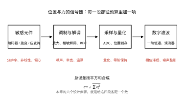
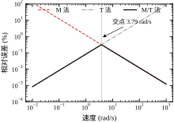
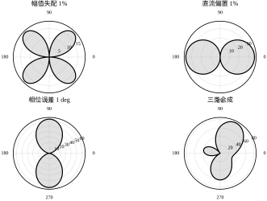
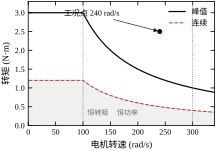
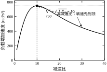
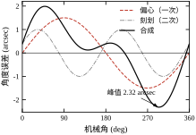
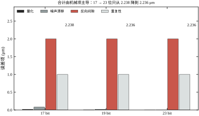
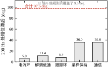
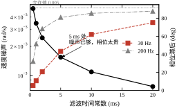
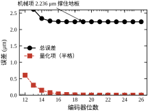

第一个片段来自一台精密磨床的 Z 轴。定位精度验收合格：激光干涉仪测得的重复性 0.8 μm，双向定位 2.1 μm，都在图纸之内。但磨出来的工件表面有约 20 μm 的波纹，频率恰好是伺服系统速度环带宽的整数倍。拆开看，问题不在机械，也不在轨迹：17 位编码器、1 ms 采样，后向差分测速的噪声是 0.0196 rad/s，这个噪声经速度环放大成力矩抖动，再经丝杠变成波纹。分辨率够用，测速噪声不够用——这两个指标在选型表上往往只写前者。
第二个片段来自一台协作机器人的关节。拖动示教时，机械臂松开手会自己缓慢地转，速度约 0.05°/s。编码器正常，电机正常，最后查到关节力矩传感器的零点漂了 0.5 N·m：重力补偿按“传感器读数为零”标定，零点一漂，补偿就多给了 0.5 N·m。重新上电标定后现象消失，但三周后又出现——传感器的零漂是时间的函数，不是常值。
两个片段指向同一件事：控制算法的输入与输出都经过传感器与执行器，而这两个环节的误差不会写进传递函数，却会在现场以“算法不灵”的面目出现。本章讲的就是这条边界上的量：分辨率、噪声、带宽、延迟、刚度、惯量。
从物理量到控制器可用的数字，中间有四个环节，每一环都会加东西：
四环串起来，总误差不是简单相加：原理性误差是系统性的，可以标定；量化与噪声是随机的，只能统计；延迟是确定性的，可以补偿但补不干净。本章的每个公式，都是在这四类里认领一类。

这四个词在选型表上经常并排出现，含义却完全不同。以本章的 19 位编码器为例：
这张清单解释了一个常见困惑：为什么 19 位编码器的“精度”只有 ±30 角秒，却仍能做出 1 μm 级的位置控制？因为位置环是闭环的，重复性与短期稳定性决定控制精度，绝对精度只决定“零位在哪”。要绝对定位，必须做回零或双编码器；要重复定位，分辨率与重复性就够。
执行器不是“给多少力矩出多少力矩”的理想源，它有三条硬边界：
三条边界合起来，给出一个最常用的选型判据：按 RMS 转矩选连续、按最恶劣工况选峰值、按最高转速校验反电动势。三者都过，才有资格谈控制带宽。
为避免空谈，全章用一台单轴回转伺服做算例，参数在表 102-1 之前先列清：
这组参数不是随便挑的：J_l/J_m=100，最优减速比正好是 10，而 10 也是常见的减速箱规格。算例的每个数都对应一个真实的选择题，后面每节都会回到它。
误解一：位数越高越好。 本章算例里，编码器从 17 位换到 23 位，量化误差从 0.038 μm 降到 0.001 μm，降了 38 倍；但定位总误差只从 2.238 μm 变到 2.236 μm，因为 2 μm 的反向间隙把预算吃光了（§102.6.6）。分辨率只在它还是瓶颈时值钱。
误解二：滤波能消噪声。 一阶低通把测速噪声从 0.0049 压到 0.0011 rad/s（4.5 倍），代价是 30 Hz 处 62° 的相位滞后（表 102-5）。速度环带宽 200 Hz，62° 足以把相位裕度吃穿。滤波是把噪声换成相位，不是消除噪声；正确的做法是观测器或更高的分辨率。
误解三：力传感器越硬越好。 同一额定 100 N·m，刚度 80 000 N·m/rad 的设计应变只有 500 με，噪声分辨率 20 mN·m；刚度 20 000 的设计应变 2000 με，分辨率 5 mN·m，但扭转变形 5000 μrad（0.29°）。刚度与分辨率是一对反向指标，选哪个取决于“关节柔度”和“力控精度”哪个更缺。
在进入公式之前，先把本章最重要的一个数量级算出来。19 位编码器、1 ms 采样，后向差分测速的噪声是
\sigma_v=\frac{q}{T_s\sqrt{6}}=\frac{1.198\times10^{-5}}{10^{-3}\times2.449}=4.89\times10^{-3}\ \mathrm{rad/s} \tag{102-1}
速度环带宽 200 Hz，等效角频率 2\pi\times200=1257 rad/s。噪声经速度环放大成加速度噪声 \sigma_a\approx\sigma_v\omega_v=6.2 rad/s²，再乘总惯量 J_mN^2+J_l=0.04 kg·m²，得到力矩噪声 0.25 N·m——是峰值转矩的 8%。
这个数说明：即使分辨率高到 2.47 角秒，直接差分测速仍然会在力矩上留下 8% 的纹波。要么把位数再加两位（噪声降到 1/4），要么换测速方法（§102.5.2 的 M/T 法），要么用观测器代替差分（§102.9.2）。但不能靠“提高采样率”来解决：\sigma_v\propto1/T_s，采样越快，差分噪声越大——这是本章最容易被想反的一处，§102.5.2 会专门澄清。本章后面的所有设计，本质上都在处理这 8%。
§102.2 给出四类传感器的数学模型：编码器量化、旋变误差、电桥输出、执行器转矩-转速；§102.3 把它们串成一张选型与校核流程；§102.4 讲连续域里的带宽与刚度；§102.5 讲离散域的量化、测速与延迟；§102.6 把误差折成定位精度与稳定性；§102.7 逐参数解释“该取多少”；§102.8 给调参顺序；§102.9 讲观测器、双编码器、力控三项改进；§102.10 落到接线、屏蔽、标定；§102.11 划边界；§102.12 给代码。
表 102-1 本章主要符号
| 符号 | 含义 | 本章取值 | 单位 |
|---|---|---|---|
| q | 编码器角分辨率 | 1.198\times10^{-5} | rad |
| T_s | 采样周期 | 1 | ms |
| f_{\text{clk}} | 测速时钟 | 100 | MHz |
| N | 减速比 | 10 | — |
| J_m / J_l | 电机 / 负载惯量 | 2\times10^{-4} / 0.02 | kg·m² |
| T_p / T_c | 峰值 / 连续转矩 | 3.0 / 1.2 | N·m |
| \omega_{\max} | 最高转速 | 300 | rad/s |
| \varepsilon | 旋变幅值失配 | 1 | % |
| k_\theta | 关节扭转刚度 | 4\times10^{4} | N·m/rad |
| V_{\text{exc}} | 电桥激励 | 5 | V |
| G_F | 应变片灵敏系数 | 2.0 | — |
| f_c / f_v / f_p | 电流 / 速度 / 位置环带宽 | 2000 / 200 / 33 | Hz |
全章约定：角度用 rad、转速用 rad/s，只有在标“角秒”或“°”时才换算；传感器输出一律折到“等效输入”，便于直接与指令比较。
把上面这些概念放进一次真实的对话，能看清它们各自的位置：
工艺：我要一台转台，30 rad/s，定位 2 μm，节拍 1 s，一天 20 小时。 控制：2 μm 折到丝杠是 2.5×10⁻⁴ rad，重复性要 1 μm 以内。先看分辨率——按允许测速噪声 0.005 rad/s 反推，19 位够。 工艺：17 位便宜一半，行不行？ 控制：17 位的差分噪声 0.0196 rad/s，是 19 位的 4 倍。你那台磨床的 20 μm 波纹就是这么来的。省下的钱不够赔废品。 采购：19 位要多 800 块，交期多两周。 控制：那就 19 位。但先别急着下单——你的背隙多少？ 机械：丝杠是新的，2 μm。 控制：2 μm 背隙 + 1 μm 重复性，RSS 已经 2.236 μm，超过 2 μm 的图纸要求。换 23 位编码器也没用，它只能改善 0.01 μm 那一项。要么换预压丝杠，要么加光栅做全闭环。 机械：预压丝杠贵 3000，光栅贵 5000。 控制：预压丝杠还能顺带提高刚度，选它。
这段对话里，“19 位”是算出来的，“背隙”是问出来的，“换预压丝杠”是预算逼出来的。三个动作的顺序，就是 §102.3 的六步流程。选型不是比参数表，是在这三个动作之间来回。
工程上谈“高精度”没有意义，要问“哪一档”。按直线定位误差粗分四档，每档的瓶颈部件完全不同：
| 档位 | 定位误差 | 分辨率需求 | 主要花钱处 | 对应的本章公式 |
|---|---|---|---|---|
| 一般 | 0.1 mm | 16 位足够 | 步进电机、同步带 | 几乎不用算 |
| 精密 | 10 μm | 17 位 | C7 丝杠、联轴器 | (102-17)、式 (102-16) |
| 高精 | 1 μm | 19 位 + 光栅 | C5 预压丝杠、全闭环 | 表 102-3 全套 |
| 超精 | 0.1 μm | 23 位以上 | 气浮/液静压导轨、恒温、隔振 | 全套 + 热与振动 |
这张表最右一列是关键：每上一档，公式要多算一层，而这一层往往不是电气。“精密”档之前，编码器与采样率决定一切；到“高精”档，背隙与丝杠螺距误差变成最大项（本章算例就是这一档）；到“超精”档，电气已经退居二线，热变形与地面振动才是主角。
成本随档位上升的斜率也不是线性的：精度每提高 10 倍，整套成本大约提高 5–10 倍。原因在于每一档都要换掉“上一档的瓶颈件”，而瓶颈件通常是最贵的那个。这解释了一个常见现象：同一台机器上，把编码器从 19 位换到 23 位，价格翻三倍，精度却一动不动——因为瓶颈根本不在编码器。
所以花钱的顺序应该反过来：先按 §102.7.10 算敏感度 S_i，再决定买什么。本章算例的敏感度表里，反向间隙的 S_i 是量化项的 4 万倍，于是“3000 元的预压丝杠”比“贵 2000 元的 23 位编码器”划算得多。这不是经验，是除法。
反过来说，如果算出来发现所有项的 S_i 都差不多（比如都在 20%–30%），说明这台机器的设计是均衡的，此时任何单项改进都只能带来 20%–30% 的收益，想要一个数量级的提升，只能整档重做。认出“我在这四档的哪一档”，比优化任何单个参数都重要。
还有一条推论值得单独说：不要在低一档的机器上做高一档的局部优化。给 10 μm 档的机器配 23 位编码器、给 1 μm 档的机器换更快的总线，都是“单点超前”——预算花掉了，整机指标一动不动，因为短板还在原处。这种配置在样机上很常见，原因往往是“某个部件正好有现成的”。
反过来，“单点落后”同样有害：整机都按 1 μm 档设计，只有编码器用了 17 位，结果噪声成了唯一瓶颈，前面所有的机械投入都被这一项抵消。四档的意义就在于：一档之内要齐，跨档才谈升级。
判断自己有没有“单点超前”，方法只有一个：把 §102.7.10 那张敏感度表算出来，看最大项与次大项差多少。差 5 倍以内算均衡，差 100 倍就是单点落后或超前。这张表算完只要十分钟，却能省下几万元的错配采购。它也是本章唯一推荐“先算再做”的动作。
编码器输出的是整数计数 n，角度是 \theta=nq。若真实角在相邻两个计数之间均匀分布，量化误差 e=\theta-nq 的统计特性是
\mathbb{E}[e]=0,\qquad \sigma_q^2=\frac{q^2}{12} \tag{102-2}
这条式子的两个含义常被忽略。第一，量化误差的方差只与分辨率有关，与信号大小无关；第二，量化误差不是白噪声——它与信号相关，在慢速运动时会表现为“台阶”，在频谱上是一串谐波，而不是平谱。工程上把它当白噪声处理，只在“一个量化台阶内跨越多个采样”时成立，也就是速度不太低的时候。
若把满量程正弦信号送进 b 位量化器，信噪比有经典结果
\mathrm{SNR}=6.02b+1.76\ \mathrm{dB} \tag{102-3}
19 位对应 116.1 dB，23 位对应 140.2 dB。这两个数很漂亮，但它们描述的是“量化”这一项，不是整条传感器链。本章算例里，19 位编码器的安装偏心带来 82 角秒误差，折算成信噪比只有约 68 dB——比量化极限低了 48 dB。选型时若只盯位数，就会把预算花错地方。
最简单的测速是后向差分
\hat\omega_k=\frac{\theta_k-\theta_{k-1}}{T_s} \tag{102-4}
两个相邻采样若量化误差独立，差值方差是 2\sigma_q^2，于是
\sigma_\omega=\frac{\sqrt{2}\,\sigma_q}{T_s}=\frac{q}{T_s\sqrt{6}} \tag{102-5}
本章 19 位、1 ms 代入得 4.89\times10^{-3} rad/s，正是式 (102-1)。这个噪声与 T_s 成反比、与 q 成正比：位数加一位，q 减半，噪声减半；采样周期减半，噪声反而加倍。两者在公式里位置对称、方向相反，不能互相替代——提高采样率买到的是带宽，付出的是噪声。
一阶低通滤波是常用的补救。设滤波时间常数 \tau，对白噪声的方差衰减近似为
\frac{\sigma_{\omega,f}^2}{\sigma_\omega^2}\approx\frac{T_s}{2\tau} \tag{102-6}
相位滞后则是 \varphi=-\arctan(\omega\tau)。本章数据：\tau=10 ms 时噪声降到 0.0011 rad/s（4.5 倍），但 30 Hz 处滞后 62°。用 62° 换 4.5 倍，这笔交易在 200 Hz 的速度环里几乎必然亏本，原因在 §102.1.6 已经算过。
工业驱动器里真正用的不是差分，而是三种计数法。设编码器一个计数对应的时间为 q/\omega，高频时钟频率 f_{\text{clk}}：
令两式相等，得到交点
\omega^*=q\sqrt{\frac{f_{\text{clk}}}{T_s}} \tag{102-7}
本章 q=1.198\times10^{-5}、f_{\text{clk}}=10^8 Hz、T_s=10^{-3} s，代入得 \omega^*=3.79 rad/s。低于它用 T 法，高于它用 M 法。这张分界图（图 102-3）是驱动器参数页上“最低/最高测速”两个数的来源：它们不是能力极限，是两种算法的交叉点。
一个容易踩的坑：M 法在 0.01 rad/s 处的相对误差是 120%，但绝对误差只有 0.012 rad/s；T 法在同一速度下相对误差 0.001%，绝对误差更小。看相对误差选算法，看绝对误差验收，两者不能混。

旋变输出两路正交信号 A\sin\theta 与 A\cos\theta，解算用 \theta=\arctan(A\sin\theta/A\cos\theta)。三类硬件缺陷会直接变成角度误差，小误差下可线性化为
\Delta\theta\approx\frac{\varepsilon}{2}\sin2\theta+\delta\cos\theta+\frac{\varphi}{2}\bigl(1-\cos2\theta\bigr) \tag{102-8}
其中 \varepsilon 是两相幅值相对失配，\delta 是直流偏置（相对幅值），\varphi 是两相相位误差。三项的“指纹”不同：幅值失配是二次的、偏置是一次的、相位误差含直流分量。这条指纹是现场诊断的依据——在 0°、90°、180°、270° 四个点各测一次，就能分辨是哪一类。
本章数据（表 102-2）：1% 幅值失配给出峰值 1031 角秒，1% 偏置给出 2063 角秒，1° 相位误差给出 3600 角秒，三项同时 4630 角秒。旋变的精度是角分量级，不是角秒级；要角秒级，必须用高精度编码器，或者做多极旋变加粗精组合。这也是为什么直驱转台用编码器、而电动汽车电机用旋变——前者要精度，后者要耐温与成本。
表 102-2 旋变三类误差的峰值与 RMS（本章扫一圈的结果）
| 误差源 | 峰值 (角秒) | RMS (角秒) | 误差随角度的形状 |
|---|---|---|---|
| 幅值失配 1% | 1031 | 729 | 二次，\sin2\theta |
| 直流偏置 1% | 2063 | 1459 | 一次，\cos\theta |
| 相位误差 1° | 3600 | 2204 | 二次 + 直流 |
| 三项同时 | 4630 | 2742 | — |

关节力矩传感器几乎都是应变式：粘贴四片应变片组成全桥，敏感梁受扭后一侧受拉、一侧受压。全桥输出与应变的关系是
V_{\text{out}}=V_{\text{exc}}\,G_F\,\varepsilon \tag{102-9}
其中 \varepsilon 是应变（无量纲），G_F 是灵敏系数（箔式片约 2.0）。本章 5 V 激励、1000 με 给出 10 mV——满量程只有毫伏级，所以放大与屏蔽比 ADC 位数更重要。
由额定载荷与允许应变可以反推敏感梁的扭转刚度：
k_\theta=\frac{T_{\text{rated}}}{\theta},\qquad \theta=\frac{\varepsilon L_{\text{eff}}}{r} \tag{102-10}
本章取 L_{\text{eff}}=0.05 m、贴片半径 r=0.02 m：1000 με 对应 \theta=2.5 mrad，额定 100 N·m 对应 k_\theta=4\times10^{4} N·m/rad。把应变降到 500 με，刚度翻倍到 8\times10^{4}，但输出减半、噪声分辨率从 10 mN·m 变差到 20 mN·m。传感器的刚度与分辨率是一对反向指标，这条式子就是 §102.1.6 第三个误解的定量版本。
直流/永磁同步电机的力矩与电流成正比，反电动势与转速成正比：
T=K_t i,\qquad E=K_e\omega \tag{102-11}
母线电压 V_{\text{dc}} 给定时，能流进绕组的电流受 (V_{\text{dc}}-K_e\omega)/R 限制，于是转速越高、可用转矩越小。工程上用“恒转矩区 + 恒功率区”近似（图 102-6）：
T_{\max}(\omega)= \begin{cases} T_p, & \omega\le\omega_b\\[2pt] T_p\,\omega_b/\omega, & \omega>\omega_b \end{cases} \tag{102-12}
本章取 \omega_b=\omega_{\max}/3=100 rad/s：100 rad/s 以下峰值 3.0 N·m，300 rad/s 处只剩 1.0 N·m。连续转矩按同一比例缩放，1.2 N·m 在 300 rad/s 处只剩 0.4 N·m。选型时若只按额定转矩选，高速段一定会失速；正确的做法是把工况点画在这张曲线上，而不是看一个数。

电机经减速比 N 驱动负载，负载端看到的加速度是
a(N)=\frac{T N}{J_mN^2+J_l} \tag{102-13}
对 N 求导并令其为零，得
N^*=\sqrt{\frac{J_l}{J_m}},\qquad a_{\max}=\frac{T}{2\sqrt{J_mJ_l}} \tag{102-14}
本章 J_l/J_m=100，N^*=10，a_{\max}=750 rad/s²。这条结论有两个常见误读。第一，N^* 让“折算到电机侧的负载惯量等于电机惯量”（J_l/N^2=J_m），不是让两者绝对值相等；第二，a_{\max} 只与乘积 \sqrt{J_mJ_l} 有关，换更小的电机不会提高加速度上限，只会把最优减速比推高。
实际选型还要叠加减速箱效率 \eta、背隙与最高输入转速。N=10 时若负载端只要 30 rad/s，电机侧就是 300 rad/s，正好压在本章电机最高转速上、一点余量都没有；若负载端要 300 rad/s，电机侧要 3000 rad/s（约 28 600 r/min），多数伺服电机做不到。惯量匹配给的是“加速度最优”，不是“转速可行”，两者要一起看（§102.3.4）。

伺服通常分电流、速度、位置三环，内环是外环的“执行器”。若内环带宽为 \omega_i，在频率 \omega 处它的相位滞后约为 \arctan(\omega/\omega_i)、幅值衰减约 1/\sqrt{1+(\omega/\omega_i)^2}。外环穿越频率 \omega_o 处的附加相位滞后近似
\Delta\varphi\approx-\frac{\omega_o}{\omega_i}\quad(\omega_o\ll\omega_i) \tag{102-15}
要把它控制在 10° 以内，需要 \omega_i\ge5.7\omega_o；要控制在 5° 以内，需要 \omega_i\ge11.5\omega_o。这就是“速度环取电流环的 1/10、位置环取速度环的 1/6”的来源：前者留 5.7°，后者留 9.5°，都在可接受范围。本章 2 kHz / 200 Hz / 33 Hz 正好是 10 倍与 6 倍。
这个规则不是审美，是相位预算。 若把位置环提到 100 Hz（速度环只快 2 倍），附加滞后 27°，原本 60° 的相位裕度掉到 33°，阶跃会出现明显过冲；若把速度环提到 1 kHz（电流环只快 2 倍），电流环自身的延迟会让速度环振起来。带宽是“借”来的，借多了要还。
一条链上的误差分两类：系统性误差（偏心、标定残差、反向间隙）与随机误差（量化、噪声、重复性）。合成规则不同：
e_{\text{sys}}=\sum_i |e_i|,\qquad e_{\text{rand}}=\sqrt{\sum_i e_i^2} \tag{102-16}
最坏情况取两者相加，统计情况取 RSS 后再加系统项。本章定位预算：量化 0.010 μm、噪声漂移 0.021 μm、反向间隙 2 μm、重复性 1 μm。若按 RSS 算是 2.236 μm，按最坏情况是 3.031 μm。报哪个数取决于验收口径：图纸写“最坏情况”，就报 3.03；写“95% 置信”，就报 2.24。两者都对，混用就不对。
这条规则也解释了为什么“加一个高分辨率编码器”经常没有效果：它只改善随机项里的一项，而系统项（反向间隙）纹丝不动。先做误差预算，再决定买什么，顺序反了就是白花钱。
增量式编码器只输出“转过了多少”，上电时不知道自己在哪；绝对式输出“现在在哪”，断电重启仍然知道。这个差别在选型表上只是一行字，在现场却是一整套流程：
本章算例的 30 rad/s 工作点、2 μm 定位要求，单圈绝对式就够（行程不足一圈）；但若行程超过一圈，多圈绝对值几乎是必选，因为回零的 1.26 s 会直接吃掉节拍。
三者的成本差在 2–5 倍，但真正的差别是“停机恢复时间”：增量式急停后要回零，多圈绝对式上电即可继续。对无人化产线，这一条的权重远大于分辨率。
三只霍尔相隔 120° 电角度安装，输出三位编码，每个电周期有六个有效状态（000 与 111 为故障态）。每个状态持续 60° 电角度，对应机械角 60°/p：本章 p=4，即 15°。
| 状态 | H_A | H_B | H_C | 导通相 | 电流方向 |
|---|---|---|---|---|---|
| 1 | 1 | 0 | 1 | A→B | 正 |
| 2 | 1 | 0 | 0 | A→C | 正 |
| 3 | 1 | 1 | 0 | B→C | 正 |
| 4 | 0 | 1 | 0 | B→A | 负 |
| 5 | 0 | 1 | 1 | C→A | 负 |
| 6 | 0 | 0 | 1 | C→B | 负 |
这张表是六步换相的全部内容。它的精度要求很低（±30° 电角度都能转），所以霍尔用最便宜的开关型即可；但它对安装相位要求严格：三只管子位置错 10° 机械角，换相就会滞后，效率掉 5% 以上，低速时还会抖。
本章的伺服用编码器做换相（矢量控制需要连续角度），霍尔只作备份。只有在“编码器坏了还能回家”这种需求下，霍尔才值得单独布线。
位置指令的传递方式决定了系统的“接口带宽”：
三者的取舍是“分辨率、延迟、布线”三角：脉冲分辨率高但速度受限，模拟延迟低但分辨率低，总线两者都好但延迟由周期定。本章选总线，是因为 30 rad/s 已经超过脉冲接口的舒适区，而 1.5 ms 延迟在 33 Hz 位置环下还能接受。
“伺服电机”不是一种东西，是六条技术路线，各自的边界差得很远：
选型的顺序是“先排除，再比较”：防爆场合排除有刷，长行程排除压电，高加速度排除“电机 + 丝杠”，要求零背隙排除“电机 + 减速箱”。排除完通常只剩一两条路线，剩下的比较才有意义。
本章选 PMSM + 减速比 8，是因为 30 rad/s、3 N·m 的工况正好落在它的高效区；若把转速降到 3 rad/s、转矩升到 30 N·m，力矩电机直驱就更合适——同一个功率，路线可以完全不同。
力/力矩传感器也有四条路线，差别在“测什么物理量”：
四条路线的选择只看两个问题：要不要测静态？要多快？要静态又要快，只有应变式（压电式快但不能静态，电容式静态但量程小）。这也是为什么协作机器人的关节力矩传感器几乎全是应变式——它要同时满足“握住不动”与“碰撞立即停”。
编码器的总误差不是白噪声，它有明确的频率结构。对一圈的误差做 FFT，看哪一次谐波最大，就能定位原因：
这个分解解释了为什么“标定能提高精度”：一次与二次可以用两个系数补掉，高次要用查找表，SDE 补不掉（它随温度与安装变化）。本章编码器标称 ±30 角秒，标定后剩 ±8 角秒——补掉的正是前两项。
工程上的用法：新机装好后转三圈，采一圈数据做 FFT。若一次谐波占主导，先查安装；若高次占主导，说明编码器本身等级不够。这比“换个更贵的编码器试试”省时间得多。

旋变的两路输出是调幅信号：
V_s=V_0\sin(\omega_{\text{exc}}t)\sin\theta,\qquad V_c=V_0\sin(\omega_{\text{exc}}t)\cos\theta \tag{102-44}
同步解调（乘以同频参考再低通）后，载波被去掉，剩下 \sin\theta 与 \cos\theta 两路直流量。角度由
\hat\theta=\arctan\frac{V_s'}{V_c'} \tag{102-45}
给出。这里用四象限 arctan（atan2），否则一圈只能解出半圈。
误差的传播可以直接微分：
d\hat\theta=\frac{V_c'\,dV_s'-V_s'\,dV_c'}{V_s'^2+V_c'^2} =\cos\theta\,dV_s'-\sin\theta\,dV_c' \tag{102-46}
把 §102.2.4 的三类扰动代进去，就得到式 (102-8) 的三项。这条推导说明三件事：
实践含义：现场若发现旋变读数有固定的角度偏差，先查两相的相位（励磁与正弦/余弦绕组的相对相位），而不是去重标零点。
选型不是“挑一个参数最好的”，而是“把六个约束逐个过一遍，看哪个先卡住”。本章给的顺序是：
顺序不能换，因为每一步的输入都是上一步的输出。先定带宽再定分辨率，等于先决定“要多快”再决定“看不看得见”；先买编码器再算预算，就是 §102.2.9 结尾说的白花钱。这条流程在 §102.3.8 用本章算例完整走一遍。
工况表要写“物理量”，不要写“指标名”。反例是“高精度、高动态”——这两个词无法验收。正例是：
这张表里每一项后面都会变成一个数：30 rad/s 决定减速比，2 μm 决定分辨率，0.1 s 决定加速度与峰值转矩，1.0 s 的占空比决定 RMS 转矩，±5 °C 决定要不要做温补。工况表写不细，后面五步全部是猜。
不要从“别人用 19 位”出发，要从“允许多大的测速噪声”出发。把式 (102-1) 反解：
q\le\sigma_{v,\text{allow}}T_s\sqrt{6} \tag{102-17}
允许 \sigma_v=0.005 rad/s（这是 §102.1.7 那笔账里“力矩纹波不超过 8%”对应的量级）、T_s=1 ms，得 q\le1.22\times10^{-5} rad。18 位的 q=2.40\times10^{-5} 大了近一倍，19 位的 q=1.198\times10^{-5} 刚好过线。位数的下限是这么算出来的，不是查表查出来的。
若想用 18 位，只有两条路：把采样降到 0.5 ms（q 上限减半，反而更不够），或者加滤波。加一阶滤波 \tau=5 ms 能把噪声压到 0.32 倍，18 位就够用了——但 §102.5.3 会算出它在 200 Hz 处带来 81° 相位滞后，速度环直接失稳。所以“用滤波换位数”在速度环里几乎总是假选项。
这条反推还给出一个容易搞反的推论：提采样率不能替代提位数，反而要求更高的位数。T_s 从 1 ms 减到 0.25 ms，q 的上限也降到 1/4，想维持同样的噪声必须再加 2 位。17 位、1 ms 的噪声是 0.0391 rad/s，同样 17 位换到 250 μs 就变成 0.157 rad/s。位数与采样率必须同向提升——这就是驱动器换代时两者一起涨、而不是只提采样率的原因。
式 (102-14) 给的是加速度最优，它只看惯量。真实减速比还要过转速关：
N\le\frac{\omega_{m,\max}}{\omega_{l,\max}},\qquad N\approx N^*=\sqrt{\frac{J_l}{J_m}} \tag{102-18}
本章 N^*=10；负载最高 30 rad/s、电机最高 300 rad/s，转速关给出 N\le10。两个约束在同一点相遇，意味着 N=10 时电机正好跑在最高转速上，没有任何余量——电网电压跌 10%、或者丝杠效率低于预期，就会在高速段失速。
工程上取 N=8：加速度从 750 掉到 731.7 rad/s²（损失 2.4%），电机最高转速降到 240 rad/s（留 20% 余量）。用 2.4% 的加速度换 20% 的转速余量，这笔交易几乎总是划算的。反过来，若负载要求 300 rad/s，N 只能取 1，此时 N/N^*=0.1，加速度只剩 148.5 rad/s²——惯量匹配在高速场合是奢侈品，先保转速。
按 §102.3.2 的占空比算 RMS：
T_{\text{rms}}=\sqrt{\frac{1}{T}\sum_kT_k^2\Delta t_k} \tag{102-19}
代入 T=3.0 N·m 加速 0.1 s、0.5 N·m 匀速 0.5 s、3.0 N·m 减速 0.1 s、停 0.3 s：
T_{\text{rms}}=\sqrt{\frac{9\times0.1+0.25\times0.5+9\times0.1+0}{1.0}}=1.387\ \mathrm{N\cdot m} \tag{102-20}
连续转矩只有 1.2 N·m，超了 15.6%。这个结果在“峰值 3.0 够用”的选型里极易被漏掉：峰值确实够，但绕组会持续升温。
两条修正：加配重把加速转矩从 3.0 降到 2.5（RMS 变 1.173，过线）；或把匀速段转矩从 0.5 降到 0.3。注意 RMS 对峰值项的权重是平方：加速段占 20% 的时间，却贡献了 1.8/1.925=93.5\% 的热量。这也是为什么“缩短加速时间”往往让热问题更糟——时间短了，但需要的转矩更高，平方之后反而更热。
先定最内环（电流环），再按 §102.2.8 的 10 倍/6 倍往外推：2 kHz → 200 Hz → 33 Hz。然后用采样率反查：
\omega_oT_s\le0.2 \tag{102-21}
位置环 33 Hz 对应 \omega_o=207 rad/s，207\times10^{-3}=0.207，刚好压在线上。这说明 1 ms 采样对 33 Hz 位置环是“够用但没余量”：再往上提到 40 Hz，\omega_oT_s=0.251，ZOH 与计算延迟合起来会把相位裕度吃掉 15° 以上。
速度环的问题更大。200 Hz 对应 1257 rad/s，1257\times10^{-3}=1.26 rad，即 ZOH 一项就有 36° 滞后——账面 200 Hz 的速度环，在 1 ms 采样下实际只能做到 120 Hz 左右。工程上的解法不是降低带宽指标，而是让速度环单独高频采样：电流环 16 kHz、速度环 4 kHz、位置环 1 kHz 是常见配置，此时速度环的 ZOH 滞后降到 9°。本章为简化全章统一用 1 ms，读者要把这个折扣记在心里。
按式 (102-16) 分列。本章 19 位的预算：量化 0.010 μm、噪声漂移 0.021 μm、反向间隙 2 μm、重复性 1 μm。RSS 合计 2.236 μm，最坏情况 3.031 μm。
若图纸要求 2 μm，RSS 口径已经超了。反解反向间隙：1.99^2-1^2-0.021^2-0.01^2=2.96，反向间隙必须压到 1.72 μm 以下；若按最坏情况口径，要求 3 μm 也超。这时只有三条路：换预压丝杠（间隙 0.5 μm）、加双编码器（把间隙移出位置环）、或改验收口径。注意三条路里没有“换 23 位编码器”——它只能把 0.010 变成 0.001，对 2.236 没有影响。
把六步的结果记成一张表，这张表就是选型报告的核心（表 102-3）。
表 102-3 六步设计记录（本章算例）
| 步骤 | 输入 | 算出 | 判定 | 结论 |
|---|---|---|---|---|
| 分辨率 | \sigma_v\le0.005 rad/s | q\le1.22\times10^{-5} | 19 位（1.198×10⁻⁵）过 | 18 位不够，除非改采样 |
| 减速比 | J_l/J_m=100，30/300 rad/s | N^*=10，N\le10 | 恰好压线 | 取 N=8，留 20% 转速余量 |
| 转矩 | 占空比 0.1/0.5/0.1/0.3 s | T_{\text{rms}}=1.387 | 超 1.2 的 15.6% | 加配重降峰值到 2.5 |
| 带宽 | 相位预算 10°/9.5° | 2 k/200/33 Hz | 位置环 \omega_oT_s=0.207 | 采样取 1 ms |
| 误差 | 间隙 2，重复 1 μm | RSS 2.236，最坏 3.031 | 2 μm 口径超 | 间隙压到 1.72 μm |
| 余量 | 温漂、标定 | 未计入 | — | 保留 20% 预算给标定 |

把六步串起来，得到的不是一台“参数最好”的伺服，而是一台每项都在及格线上、且知道余量在哪的伺服：
这张清单里唯一“不达标”的是定位精度，而它的瓶颈是机械间隙，不是电气。设计做到这一步，采购清单就已经确定了：钱应该花在预压丝杠上，而不是更高位数的编码器。
其一：先定带宽，再发现采样不够。 要求位置环 100 Hz，做完才发现 PLC 周期 2 ms（500 Hz），\omega_oT_s=1.26 rad。补救只能降带宽，前面的机械选型全部白做。采样率是硬约束，应该最先确认。
其二：先买高分辨率编码器，再发现瓶颈在间隙。 这在 §102.1.6 已经算过：17 位换 23 位，总误差 2.238 → 2.236 μm。分辨率的收益只在它还是最大单项时才兑现。
其三：先按峰值选电机，再发现热不够。 峰值转矩只受限于磁路饱和与短时温升，连续转矩受限于散热。两者比值 2.5 是典型值，按峰值选的电机在连续工况下几乎必然过热。判断方法就是式 (102-19)：把整个节拍代进去算一个数。
三个典型的共同点是“把一个局部指标当成全局最优”。六步流程的价值不在于公式多，而在于强制你在每一步都抬头看一眼别的约束。
现场没有时间每次推导，六步可以固化成一页表格，左边填输入、右边出结果：
| 行 | 输入单元格 | 公式 | 输出 |
|---|---|---|---|
| 1 | 行程、最高速、节拍 | 手填 | 工况表 |
| 2 | \sigma_{v,\text{allow}}、T_s | 式 (102-17) | 最少位数 b |
| 3 | J_m、J_l、\omega_{l,\max}、\omega_{m,\max} | 式 (102-18) | N 的范围 |
| 4 | 占空比、各段转矩 | 式 (102-19) | T_{\text{rms}} |
| 5 | \omega_o、T_d | 式 (102-21)(102-33) | 可达带宽 |
| 6 | 间隙、重复性、量化 | 式 (102-16) | 总误差与瓶颈 |
这张表的价值在于它把“经验”变成了“可审阅的算术”。评审时不用争论“我觉得 19 位够了”，直接把第 2 行代进去；也不用争论“背隙要不要紧”，第 6 行会告诉你它占多少。
表里唯一需要“手填”的是第 1 行——这也是最容易被敷衍的一行。工况表填得粗，后面五行全是精确的错误。评审一份选型报告，先看第 1 行。
六步里，第一步（工况表）大家都知道要做，第三、四步（减速比、转矩）有电机手册可查，第五、六步（带宽、误差）有仿真工具代劳。最常被跳过的是第二步——从允许噪声反推分辨率。跳过它的理由通常是“编码器是采购选的，不是我们设计的”，但这一步恰恰是五分钟就能做完、且直接对应几千元差价的一步。
把式 (102-17) 再解一层，直接给出位数：
b_{\min}=\left\lceil\log_2\frac{2\pi}{\sigma_{v,\text{allow}}T_s\sqrt{6}}\right\rceil \tag{102-53}
本章 \sigma_{v,\text{allow}}=0.005、T_s=10^{-3}，分母是 1.2245\times10^{-5}，比值 51.3 万，\log_2 得 18.97，向上取整 19 位。整个计算在手机计算器上两步就能完成。
反过来也成立：若算出来的位数比你手上的编码器少 2 位以上，就是过量采购。19 位换 17 位省下的钱，通常够把丝杠从 C7 升到 C5——而本章算例已经证明，丝杠那一项对最终精度的贡献大 4 万倍（§102.7.10）。“少买两位、升级机械”几乎是所有中端伺服最划算的一笔调换。
两个例外要记住。低速平稳性要求高的场合（直驱转台、光学扫描），位数带来的不是噪声改善而是速度台阶变细，此时多用两位是值得的；高刚度直驱没有减速比放大分辨率，位数直接等于精度，也不能省。
除了这两个例外，第二步的结论就应该硬性执行。它是六步里唯一一个“算得准就能直接换成钱”的步骤，也是把“经验选型”变成“可审阅算术”的第一块砖。
§102.1.2 的四段链，在连续域里各有一个最小模型：
四段串起来，相位是一条单调下降的曲线。带宽的本质就是“相位还剩多少”，所以这一节的任务是把每一段的相位代价算出来，看谁最贵。
一阶低通的幅频与相频是
|G(j\omega)|=\frac{1}{\sqrt{1+(\omega\tau)^2}},\qquad\angle G(j\omega)=-\arctan(\omega\tau) \tag{102-22}
在 \omega\tau=1 处幅值掉 3 dB、相位 −45°；在 \omega\tau=3 处幅值掉 10 dB、相位 −71.6°；在 \omega\tau=10 处幅值掉 20 dB、相位 −84.3°。衰减再多，相位也不会超过 90°——这是“低通不能当纯延迟用”的原因，也是“多级滤波串联”会迅速吃掉相位裕度的原因：两级各 −71.6°，合起来 −143°。
本章算例里有两个一阶环节：旋变解调低通与电流环。前者 \tau_d=0.16 ms，后者 \tau_e=83 μs。它们在 200 Hz（1257 rad/s）处的相位分别是 −11.4° 与 −5.9°。单看都不大，加起来 17.3°，已经超过 10°/6 倍分离预留的 9.5°。这就是为什么 §102.2.8 的“10 倍”只是起点，实际要按相位预算重新核。
旋变输出是调幅信号 V\sin(\omega_{\text{exc}}t)\sin\theta，解调后得到 \sin\theta 与 \cos\theta 两路。数字变换（RDC）通常用跟踪环：
\hat\theta(s)=\frac{2\zeta\omega_ns+\omega_n^2}{s^2+2\zeta\omega_ns+\omega_n^2}\theta(s) \tag{102-23}
跟踪环本质是一个二阶低通，\omega_n 决定“跟得多快”，\zeta 决定“跟得多稳”。典型 \omega_n=2\pi\times500 rad/s、\zeta=0.7，在 200 Hz 处幅值衰减 0.32 dB、相位 −8.2°。这个环不是免费的：它把旋变的原理性误差（§102.2.4）平滑掉了，代价是延迟。
更要紧的是解调低通。\tau_d=0.16 ms 看似很小，但它与跟踪环串起来，在 200 Hz 处的总相位是 −19.6°。若励磁频率选 10 kHz（\omega_{\text{exc}}=62\,832 rad/s），解调必须滤掉 2 倍频（20 kHz），\tau_d 就被压到 0.1 ms 量级——励磁频率越高，解调越快，但绕组匝数与铁芯损耗也越高，这是旋变选型里第一个真实的折中。
§102.2.5 的力矩传感器在连续域里不是一个“增益”，而是一个弹簧：
T=K_x\theta,\qquad K_x=\frac{T_{\text{rated}}}{\theta_{\text{rated}}} \tag{102-24}
本章 100 N·m 传感器、1000 με 设计点、臂长 20 mm、有效长度 50 mm，算得 \theta=2.5 mrad，K_x=40\,000 N·m/rad。把它接在负载与减速箱之间，就形成二质量系统：
\omega_{\text{res}}=\sqrt{K_x\left(\frac{1}{J_mN^2}+\frac{1}{J_l}\right)} \tag{102-25}
代入 J_mN^2=0.02、J_l=0.02、K_x=4\times10^4：\omega_{\text{res}}=\sqrt{4\times10^4\times100}=2000 rad/s，即 318 Hz。这个频率在速度环 200 Hz 之上，所以本章算例里它还不构成威胁；但若把传感器做软（K_x=2\times10^4，为了更高的力分辨率），\omega_{\text{res}} 降到 225 Hz，正好压在速度环带宽上——力传感器的分辨率与关节刚度是一对反向指标，§102.1.6 的第三个误解讲的就是这件事。
电机在连续域的模型是两个一阶串一个积分：
\tau_e=\frac{L}{R},\qquad\tau_m=\frac{JR}{K_t^2} \tag{102-26}
本章取 L=0.5 mH、R=6 Ω、K_t=1.0 N·m/A、J=0.04 kg·m²，得 \tau_e=83 μs（1.9 kHz）、\tau_m=0.24 s（0.66 Hz）。两者差了近 3000 倍，这就是“电流环快、速度环慢”的物理根源——速度环不是在控电机，是在控一个 0.66 Hz 的机械极点。
速度环的 PI 零点通常放在 1/\tau_m=4.17 rad/s，把它对消掉，剩下的是 K_t/(Js) 的积分特性。若零点放错（比如放在 40 rad/s），0.66 Hz 的极点没被对消，速度环在低频段会多出 90° 相位，阶跃响应出现长时间拖尾。“积分时间等于机械时间常数”这条经验法则，就是从式 (102-26) 来的。
三相霍尔每电周期给出 6 个边沿。p 对极的电机，机械一转有 6p 个边沿，角分辨率是
\theta_{\text{res}}=\frac{2\pi}{6p} \tag{102-27}
p=4 时为 15°，与 19 位编码器的 2.47 角秒差 2.2 万倍。但霍尔的价值不在分辨率，而在三件事：换相（六步换相只需要 60° 电角度）、上电初判转子位置（绝对值编码器坏掉时的备份）、低速冗余（与编码器交叉校验，检出滑环故障）。
工程上常见“霍尔 + 增量编码器”的组合：霍尔管换相与上电定位，编码器管测速与位置。不要指望霍尔做速度环反馈——15° 分辨率在 30 rad/s 下，一个边沿只隔 8.7 ms，差分测速的噪声是编码器的上千倍。
把本章算例的各段在 200 Hz 处的相位代价列出来（表 102-4）。§102.2.8 的 10 倍/6 倍规则只算了内环自身的一阶滞后（9.5°），而这条链上还有解调、跟踪环、采样保持与通信四段；把它们都算上，200 Hz 处的附加相位接近 100°。
表 102-4 本章算例在 200 Hz 处的相位代价
| 环节 | 时间常数 / 等效延迟 | 200 Hz 处相位 | 备注 |
|---|---|---|---|
| 电流环 | \tau_e=83 μs | −5.9° | 一阶近似 |
| 旋变解调低通 | \tau_d=0.16 ms | −11.4° | 依赖励磁频率 |
| 跟踪环（RDC） | \omega_n=3142 rad/s | −8.2° | 二阶、\zeta=0.7 |
| 采样保持 | T_s/2=0.5 ms | −36.0° | 1 ms 采样 |
| 计算与通信 | 0.5 ms | −36.0° | EtherCAT 一大拍 |
| 合计 | — | −97.5° | 各项直接相加 |
这张表给出的结论很硬：1 ms 采样下，200 Hz 速度环根本不可能有 60° 相位裕度。实际系统要么把速度环降到 100 Hz 左右，要么把采样提到 250 μs，要么接受一个 30° 左右的裕度并用陷波器压谐振峰。三种做法都对，唯一错的是“看账面 200 Hz 就以为有 60° 裕度”。

这一节的模型都只到一阶或二阶，它解释不了三件事：齿槽转矩与摩擦力（非线性、位置相关）、PWM 死区（每周期的固定误差）、结构的高阶模态（§第 101 章的柔性臂）。连续模型的作用是给出量级与主极点，把“哪个环节最贵”排出来；剩下的细节要靠离散仿真与实验。这也解释了为什么 §102.3 的流程里，“带宽”排在“分辨率”之后——先知道看得见什么，再决定跑多快。
现场遇到噪声，最直觉的动作是“再加一级滤波”。算一下就知道为什么这是最差的选择。
两级一阶、各 \tau=2 ms，在 200 Hz 处的相位是 2\times(-84.5°)=-169°；噪声约降到单级的 0.49 倍（再乘 0.49，约 0.24）。相位是相加的，噪声是按级相乘的——这就是问题的根源。
若改用一级、\tau=8 ms：噪声降到 0.25（与两级基本相同），相位只有 -84.3°，少了一半。原因很直接：一阶环节的相位最多 90°，串几级就叠几个 90°；而噪声的衰减与 \tau 的平方根成正比，加大 \tau 比多串一级更“划算”。
结论：滤波要么用一级、把 \tau 取够；要么不用，去提高分辨率或用观测器。多级串联只在一种场合合理：需要陡峭的滚降来抑制某个特定频率（比如 20 kHz 的开关噪声），这时用二阶或陷波，而不是“再串一个一阶”。
这条结论与 §102.7.6 的“\tau\le1/(5\omega_c)”是同一件事的两面：规则给的是“一级”的上限，多级串联等于把上限又压低了一半。
选电机时大家先看转矩-转速曲线，但决定“力矩能不能做快”的是两个时间常数：
\tau_e=\frac{L}{R},\qquad \tau_m=\frac{JR}{K_t^2} \tag{102-52}
\tau_e 是电枢电流建立到 63% 的时间，\tau_m 是堵转状态下转速升到空载 63% 的时间（J 用折算到电机侧的总惯量）。两者都只由电机参数与负载决定，与控制器无关。
本章电机 L=0.5 mH、R=6\ \Omega、K_t=1.0 N·m/A、J=0.04 kg·m²，代入得 \tau_e=83 μs（对应 1.9 kHz）、\tau_m=0.24 s（对应 0.66 Hz）。两者差 2900 倍——这正是 §102.4.5 那句“速度环不是在控电机，而是在控一个 0.66 Hz 的机械极点”的来源。
这个比值决定了电流环要做多快：
本章 \tau_e/\tau_m=3.5\times10^{-4}，落在第一档，所以 §102.8.2 的“用 PI 零点对消 L/R”在这里是“锦上添花”——即使不对消，1.9 kHz 的电气极点也远在 2 kHz 电流环带宽附近，只损失十几个度相位。同一个技巧，在第二、三档的电机上就是保命的。
两条改进路径的代价完全不同。降 \tau_e 要靠低电感电机（空心杯可以做到几十微亨，\tau_e 降到 0.05 ms，力矩带宽上到 5 kHz）或提高 PWM 频率（纹波减小但开关损耗上升）。升 \tau_m 只能靠加大惯量或减小 K_t，而这两条都会直接降低加速度（式 102-13），是负优化。
所以工程上真正的选择是“选电机时看一眼 \tau_e/\tau_m”，而不是“调试时想办法补救”。一个 \tau_e/\tau_m=0.8 的电机，无论怎么调，力矩环都做不快；把它装到需要 200 Hz 速度环的轴上，失败在设计阶段就注定了。
连续域的传感器误差是“一条曲线”，采样与量化之后变成“一串格子”。格子的宽度是 q，格子的节拍是 T_s。所有离散域的麻烦都来自这两个数：q 决定最小能看见多少，T_s 决定最快能反应多快。
本章 19 位编码器 q=1.198\times10^{-5} rad（2.47 角秒），1 ms 采样。把这两个数放在一起，立刻得到三个派生量：
第一、二条说明“低速时速度信号是台阶状的”，第三条说明“台阶的高度就是噪声的尺度”。这三条是同一个 q/T_s 的三种说法，后面所有改进（M/T 法、滤波、观测器）都是在改这三条中的某一条。
位置序列 x_k 的量化误差在 [-q/2,q/2] 内均匀分布，方差 q^2/12。后向差分
\hat\omega_k=\frac{x_k-x_{k-1}}{T_s} \tag{102-28}
两个独立量化误差相减，方差加倍，再除以 T_s^2：
\sigma_\omega=\frac{1}{T_s}\sqrt{2\cdot\frac{q^2}{12}}=\frac{q}{T_s\sqrt{6}} \tag{102-29}
这就是式 (102-1)。\sqrt{6} 不是拟合出来的，是两个均匀分布相减的结果。若改用中心差分 (x_{k+1}-x_{k-1})/(2T_s)，噪声变成 q/(2T_s\sqrt{6})，降一半，代价是多一拍延迟——这是“噪声换延迟”的第一个实例。
19 位、1 ms 下 \sigma_\omega=0.0049 rad/s。这个数放在 30 rad/s 的工作点上只有 0.016%，看起来微不足道；但 §102.1.7 已经算过，它经速度环放大后是 0.25 N·m 的力矩纹波。百分比是骗人的，要折算到执行器上才知道疼。
一阶低通 y_k=ay_{k-1}+(1-a)x_k，a=e^{-T_s/\tau}。稳态噪声方差按几何级数求和：
\sigma_{\text{out}}=\sigma_{\text{in}}\sqrt{\frac{1-a}{1+a}},\qquad a=e^{-T_s/\tau} \tag{102-30}
\tau\gg T_s 时近似为 \sigma_{\text{in}}\sqrt{T_s/(2\tau)}。相位滞后 -\arctan(\omega\tau)。本章 19 位、1 ms 的实算结果见表 102-5。
表 102-5 一阶滤波的噪声-相位折中（19 位，1 ms，30 Hz 处）
| \tau (ms) | \sigma_\omega (rad/s) | 相对无滤波 | 30 Hz 相位滞后 | 200 Hz 相位滞后 |
|---|---|---|---|---|
| 0 | 0.0049 | 1.00 | 0° | 0° |
| 2 | 0.0024 | 0.49 | 20.7° | 84.5° |
| 5 | 0.0015 | 0.31 | 43.3° | 89.4° |
| 10 | 0.0011 | 0.22 | 62.1° | 89.7° |
| 20 | 0.0008 | 0.16 | 75.1° | 89.8° |
这张表的读法：噪声按 1/\sqrt{\tau} 下降，相位按 \arctan(\omega\tau) 上升，后者很快就饱和到 90°。\tau 从 2 ms 加到 20 ms，噪声只再降 3 倍，30 Hz 滞后却从 20.7° 涨到 75.1°。所以滤波的可用区间很窄：在速度环穿越频率处，\tau 最多取 1/(5\omega_v)，本章 200 Hz 对应 \tau\le0.16 ms——比表中最小档还小一个数量级。
结论：一阶滤波只能用在“信号比带宽慢得多”的场合，比如温度补偿、电池电流、称重。速度环里用它，等于用相位买噪声，而这笔交易在 200 Hz 上是亏的。要压速度噪声又不想吃相位，只有三条路：提高分辨率、改测速方法（T 法或 M/T 法）、用观测器（§102.9.2）。提采样率不在其中——它会把差分噪声按 1/T_s 放大（§102.7.3）。

M 法数“固定时间内有多少个脉冲”，低速时脉冲太少，误差 \propto1/v；T 法测“一个脉冲周期有多长”，高速时周期太短，误差 \propto v。两者误差相等处就是分界：
\omega^*=q\sqrt{\frac{f_{\text{clk}}}{T_s}} \tag{102-31}
本章 q=1.198\times10^{-5}、f_{\text{clk}}=100 MHz、T_s=1 ms，得 \omega^*=3.79 rad/s。实算的误差表（表 102-6）验证了这个分界：0.01 rad/s 处 M 法 119.8%、T 法 0.001%；100 rad/s 处 M 法 0.012%、T 法 8.344%。M/T 法取两者较小，在 0.01–0.1 rad/s 区间误差 0.001%–0.008%，比 M 法好四个数量级。
表 102-6 三种测速方法的相对误差（19 位，1 ms，100 MHz）
| 速度 (rad/s) | M 法 | T 法 | M/T 法 |
|---|---|---|---|
| 0.01 | 119.8% | 0.001% | 0.001% |
| 0.1 | 12.0% | 0.008% | 0.008% |
| 1 | 1.20% | 0.083% | 0.083% |
| 10 | 0.12% | 0.834% | 0.12% |
| 100 | 0.012% | 8.344% | 0.012% |
分界点的物理含义：在 \omega^* 以下，一个采样周期内的脉冲数不足，M 法“数不准”；在 \omega^* 以上，一个脉冲的周期太短，T 法的时钟计数“数不准”。M/T 法同时数脉冲与时钟，用一个“高频时钟在多个脉冲上的平均”把两边都救回来。它的代价是需要编码器提供 A/B 正交信号与独立的时钟输入，不是所有驱动器接口都给。
位置环的输入是整数计数。目标位置若落在两个计数之间，误差永远不为零，控制器会在 \pm q/2 内来回修正。表现是：电机停在目标附近以几赫兹的频率轻微抖动，力矩电流表指针跳动。
抖动的幅度是 q/2（折算到负载是 q/(2N) 或乘丝杠导程），频率由位置环增益与机械时间常数决定。本章 K_p=207 s⁻¹、J=0.04，抖动频率约 \sqrt{K_p/\tau_m}/(2\pi)=\sqrt{207/0.24}/6.28=4.7 Hz。这个频率很低，听不见，但会在工件表面留下周期性的波纹——与 §102.1.1 第一个片段的 20 μm 波纹是同一类现象，只是源头不同：那里是测速噪声，这里是量化死区。
两条对策：把到位窗口设成 \pm2q（承认量化），或用 q/2 的抖动作为“电气注入”来消除静摩擦。前者是工程常规，后者是有意利用——很多高端驱动器有一个“微振”参数，就是干这个的。
从“位置被采样”到“力矩被更新”，延迟由三部分组成：
T_d=\frac{T_s}{2}+\frac{T_s}{2}+T_{\text{comp}} \tag{102-32}
第一项是采样保持（信号在周期内均匀到达，平均延迟半拍），第二项是 PWM 更新（占空比在下一个周期生效，再半拍），第三项是计算与总线传输。本章 EtherCAT 一大拍 0.5 ms，合计 T_d=1.5 ms。
1.5 ms 在 200 Hz（周期 5 ms）处是 108° 相位——仅延迟一项就把速度环的相位裕度吃光了。这就是 §102.4.7 表中“采样保持 −36°、通信 −36°”的来源，也是为什么高速伺服必须把总线周期压到 125 μs 甚至 62.5 μs。带宽不是算出来的，是延迟允许出来的。
把上面几条合起来，采样率被三条约束夹住，但方向不同：
本章 q=1.198\times10^{-5}、\sigma_{\text{allow}}=0.005、T_{d,\text{allow}}=2 ms、\omega_o=207，三条分别给出 T_s\ge0.98 ms、T_s\le1.33 ms、T_s\le0.97 ms。两个上界都比下界略低，严格说无解；1 ms 是“噪声 0.00489 刚好吃在 0.005 以下、\omega_oT_s=0.207 贴在 0.2 上”的临界折中。
这个“无解”本身就是结论：19 位 + 1 ms 这条配置没有余量。任何一头想改善，都必须先动另一头。要把采样做到 0.5 ms，q 的上限跟着减半，至少要用 20 位；要把位置环做到 100 Hz（\omega_o=628），T_s 上界降到 0.32 ms，至少要 21 位。采样率从来不是单独可调的参数，它永远与位数绑在一起。
反过来，如果算出来的上下界之间隔着很宽的空隙，说明这台机器是过设计的：可以降一位省成本，或把周期放到 2 ms 省 CPU。上下界贴死是“刚好”，空隙很大是“浪费”，两者都不是错，但不能不知道自己站在哪一边。
上面全是解析式，它们假设量化误差独立、均匀、白。真实系统里这三条都不完全成立：量化误差与信号相关（低速时尤其明显）、PWM 死区引入周期性误差、编码器的细分误差不是白的。解析式给量级，仿真给波形。
ch102_sim.py 里对应三个函数：velocity_noise() 给式 (102-29)(102-30) 的数，mt_error() 给表 102-6，positioning_error() 给式 (102-16) 的预算。三者的输出与本节表格逐项对得上——这是正文数字可复现的最低要求。至于波形层面的现象（极限环、死区台阶），要靠时域仿真，本章不展开，留给读者在自己平台上验证。
19 位的 524 288 个计数不是“刻”出来的，是四道工序乘出来的：
分辨率是乘出来的，精度是校出来的。这也解释了为什么“23 位编码器”卖得贵：它需要更高的刻线密度（或更强的插补）、更严格的装配、更完整的校正表。没有校正表的 23 位，精度可能还不如有校正的 19 位。
细分还有一个副作用：细分误差（SDE）是周期性的，周期等于一个刻线周期（2\pi/8192，即 158 角秒）。在 19 位下，一个刻线周期里有 64 个计数，SDE 的峰峰值典型 2–5 角秒，相当于 1–2 个计数。它不会出现在“分辨率”指标里，但会出现在“低速平稳性”里——这是 §102.10.10 案例中“换编码器后波纹没完全消失”的原因之一。
前面把采样保持简化成“半拍延迟”，这只在低频成立。完整的频域模型是
H_{\text{ZOH}}(j\omega)=\frac{1-e^{-j\omega T_s}}{j\omega T_s} =e^{-j\omega T_s/2}\,\frac{\sin(\omega T_s/2)}{\omega T_s/2} \tag{102-47}
它同时给出相位与幅值：相位是 -\omega T_s/2（半拍），幅值是 sinc 函数。本章 T_s=1 ms：
幅值衰减这一项常被忽略，但它在高带宽场合很要命：速度环若设计在 500 Hz，ZOH 会额外吃掉 3.9 dB 的开环增益，等效于把穿越频率往下拉。很多“仿真很好、实测偏慢”的系统，差的就是这个 sinc。
这条公式还解释了“为什么采样率至少要是带宽的 10 倍”：\omega T_s=0.2 时 sinc 只掉 0.015 dB、相位 −5.7°；到 \omega T_s=1 时掉 0.37 dB、−28.6°。10 倍是“几乎无影响”的经验分界，不是理论必需。
§102.5.1 的三条派生量都建立在一个假设上：量化误差独立、均匀、白。高速时这个假设成立，低速时不成立，而低速恰恰是最难调的地方。
取一个具体速度：v=q/(2T_s)=0.006 rad/s，即每拍前进半个计数。理想情况下编码器输出在 0 与 1 之间交替，后向差分得到的速度序列是 0,0.012,0,0.012,\dots——均值 0.006 是对的，但它不是白噪声，而是一根 500 Hz 的线谱（采样 1 kHz，两拍一个周期）。
两个后果立刻出来。其一是方差：这个交替序列的标准差约 0.006 rad/s，比白噪声公式给的 0.0049 大 1.2 倍，而且这个比值随速度变化，不是一个常数。其二是频谱：所有能量挤在奈奎斯特频率上，速度环在 200 Hz 处几乎不衰减它，于是电流指令里出现一根 500 Hz 的纹波——听起来像尖锐的啸叫，看起来像 §102.1.1 那种等间距波纹。
更隐蔽的是位置环。到位后若速度指令恰好落在 q/(2T_s) 附近，位置读数会在两个相邻计数间来回跳，积分器把这个“半计数”当成误差反复修正，形成每两拍一次的极限环。现场描述常是“停稳后每秒钟抖几下”，而看阶跃响应完全正常。
三个解法，按代价排序：
结论：白噪声公式给的是“量级”，不是“波形”。判断一台机器会不会在低速抖，不能只看 \sigma_\omega，要看 q/T_s 与工作速度的比值——工作速度落在 q/T_s 的 1–3 倍以内，就一定会遇到线谱问题。这也是 §102.5.8 说“离散域必须仿真验证”的具体理由。
工程上说“这套伺服性能好”，其实混了三件事：
三层是嵌套的：不稳的系统谈不上抖不抖，抖的系统谈不上准。选型与调试要按这个顺序做，反过来的典型是“为了准把增益调高，结果抖起来”。本节按这三层展开。
纯延迟 T_d 在穿越频率处贡献相位 \omega_cT_d。若要求相位裕度 \varphi_m，对积分型对象（速度环、位置环的典型近似）有
\omega_{c,\max}=\frac{\pi/2-\varphi_m}{T_d} \tag{102-33}
本章 T_d=1.5 ms。要求 \varphi_m=45°（\pi/4）时 \omega_{c,\max}=523 rad/s，即 83 Hz；要求 60°（\pi/3）时降到 349 rad/s，即 55.6 Hz。这两个数把“位置环能跑多快”钉死了：与电机、编码器、算法都无关，只与延迟有关。
这也解释了为什么位置环 33 Hz 是“保守但合理”的：它对应 \omega_cT_d=0.31 rad=17.8°，在 60° 裕度里只占三成，剩下的留给机械谐振与摩擦非线性。把位置环提到 80 Hz 不是不可能，但必须先把 T_d 压到 0.5 ms——也就是总线周期 125 μs、计算延迟 100 μs 量级，这是“高端伺服”与“通用伺服”的真实分界。
位置环对斜坡与抛物线输入的稳态误差是
e_{\text{ramp}}=\frac{v}{K_p},\qquad e_{\text{acc}}=\frac{a}{K_p^2} \tag{102-34}
本章 K_p=207 s⁻¹、v=30 rad/s、a=750 rad/s²：e_{\text{ramp}}=0.145 rad（8.3°），e_{\text{acc}}=0.0175 rad（1.0°）。这两个数大到不能接受，说明纯比例位置环在高速工况下根本不够用。
实际做法是加速度前馈：把轨迹的二阶导乘 J/K_t 直接加到电流指令上，稳态误差可降到 1% 量级。前馈不改变稳定性（它不在闭环内），但要求轨迹已知且模型准确——前馈是“用模型换精度”，模型错了会把误差换成另一种误差（详见第 46 章）。
注意 e_{\text{acc}}\propto1/K_p^2：把 K_p 从 207 提到 400，斜坡误差减半、抛物线误差减到 1/3.7。这是“提增益”最有力的理由，也是它最容易踩坑的地方——§102.6.2 已经说过，K_p 的上限由延迟定死。
摩擦有两个分支：静摩擦 F_s 与动摩擦 F_k，通常 F_s>F_k。低速时速度环的输出力矩不足以“跳过”这个落差，于是出现粘滑：静止—突然滑动—再静止，周期约几十毫秒，表现为爬行与噪声。
判据可以写成一个临界速度：
v_{\text{stick}}\approx\frac{F_s-F_k}{b} \tag{102-35}
b 是粘性阻尼系数。本章 F_s-F_k=0.005 N·m、b=0.002 N·m·s/rad，得 v_{\text{stick}}=2.5 rad/s——最高转速的 8% 以下全在粘滑区。真实系统的落差与阻尼差别很大，临界速度在 0.1–2 rad/s 量级，但结论一样：低速性能不是靠调 PID 得到的，是靠机械与摩擦补偿。
三条对策按性价比排序：用滚柱导轨代替滑动导轨（改 F_s-F_k）、加力矩前馈做摩擦补偿（改控制器）、用 §102.5.5 的微振（改工作点）。第一条最有效但最贵，第三条最便宜但只治标。
抖动有两个观察窗口：耳朵（20 Hz–20 kHz 的啸叫）与工件表面（波纹）。本章算例的两个抖动源频率都不高：
“听不见”不等于“没影响”。判断方法：把速度环暂时开环（力矩模式），若波纹消失，源头在测速；若仍在，源头在机械（丝杠、轴承、联轴器）。这个二分法是现场最省时间的排查手段。
总误差是 RSS 合成时，把某一项减半带来的收益是
e_{\text{new}}=\sqrt{e^2-\tfrac34e_{\max}^2} \tag{102-36}
本章 e=2.236、e_{\max}=2（反向间隙）：减半后 e_{\text{new}}=\sqrt{5.0-3.0}=1.414 μm，降 37%。若改去砍量化项（0.010 → 0.005），e_{\text{new}}=\sqrt{5.0-0.000075}=2.23597，降 0.001%。同样的工程投入，收益差 4 个数量级。
这条公式把“先砍最大项”从经验变成了算术。它还有一个反直觉的推论：当某一项占比超过 80% 时，其他项再怎么优化都没意义；反过来，当各项接近相等时，总误差已经接近理论下限，再投入的边际收益极低。误差预算的作用不是算出总数，是找出该砍哪一项。
反向间隙是“输入反向时，输出先空走一段”。它的三个特点让它难以补偿：
常见的“间隙补偿”是在换向时加一个固定的偏置，本质是开环前馈。它能改善重复定位，但对随机换向的轨迹无效，而且补偿量错了会让误差更大。真正的解法是双编码器（§102.9.3）或预压机械——把间隙从“控制问题”变回“机械问题”。
一套伺服调试完，报告上应该只有四个数：
前两个从频响扫出来，后两个从激光干涉仪与电流录波读出来。四个数都在，才叫“性能已知”；只有“定位精度 2 μm”一个数，说明还不知道这 2 μm 是怎么来的。
扫出来的 Bode 图上有四个特征值得读：
还有一个技巧：从相位曲线的斜率读纯延迟。理想的最小相位系统相位从 0 平滑降到 −180°；若叠加了纯延迟，相位会“多降一截”，且频率越高降得越快。对 \varphi(\omega)=-\omega T_d 求导得 T_d=-d\varphi/d\omega。本章 1.5 ms 的延迟，在 200 Hz 到 400 Hz 之间应让相位多降 1.5\times10^{-3}\times2\pi\times200=1.88 rad——扫频时量一下这段斜率，就能把“延迟到底是 0.5 ms 还是 3 ms”测出来，比查手册可靠。
三条常见误读：把 −3 dB 点当“带宽”（它只是幅值，不含相位）；不看相干性（相干性低于 0.8 的频段数据不可信）；扫频幅值太大（激发摩擦非线性与限幅，测出来的“谐振”其实是极限环）。扫频的激励幅值应小于正常工作的 10%。
跟踪误差与扰动抑制是两个不同的指标。扰动（摩擦、切削力、重力变化）到位置误差的传递是灵敏度函数
S(s)=\frac{1}{1+L(s)},\qquad |S(j\omega)|\approx\frac{\omega}{\omega_c}\ \ (\omega\ll\omega_c) \tag{102-48}
它说明“低频扰动被压制 \omega_c/\omega 倍”。本章 K_p=207（即 \omega_c\approx207 rad/s）：
三个数说清了一件事：伺服对“慢扰动”几乎免疫，对“接近带宽的扰动”无能为力。这也解释了为什么 10 Hz 附近的机械问题（导轨爬行、皮带抖动）最难靠调增益解决——它正好落在灵敏度开始上升的区间。
要提高某个频段的抑制，只有两条路：提高 \omega_c（受延迟限制，§102.6.2），或在那个频段加一个谐振控制器/重复控制器（窄带，只对一个频率有效）。“把增益调高”在 10 Hz 处能换来 3.3 → 6.6 倍，代价是相位裕度掉一半——这笔交易通常不划算。
谐振是伺服里最“讲道理”的敌人：它有确定的频率、确定的模型，看起来只要加一个陷波器就能解决。实际上陷波器能救的时间比想象中短，原因有两个。
先把谐振算出来。电机惯量 J_m 经传动链（刚度 k）带负载 J_l，折算到电机侧是一个两质量模型：
\omega_a=\sqrt{\frac{k}{J_l'}},\qquad \omega_r=\sqrt{k\left(\frac{1}{J_m}+\frac{1}{J_l'}\right)}=\omega_a\sqrt{1+\frac{J_l'}{J_m}} \tag{102-51}
本章 J_m=2\times10^{-4}、J_l'=J_l/N^2=3.125\times10^{-4}，取减速箱扭转刚度 k=500 N·m/rad，得 \omega_a=1265 rad/s（201 Hz）、\omega_r=2025 rad/s（322 Hz）。反谐振在前、谐振在后，比值 1.6——这是两质量模型的标准形状。
第一个限制：陷波器在穿越频率处就要交相位。一个中心 322 Hz、Q=5 的陷波，在 200 Hz 穿越频率处已经带来 11.5° 的相位滞后；把 Q 放宽到 1（为了覆盖频率漂移），同一处的滞后涨到 45°，速度环基本没法用了。所以“陷波深度”与“相位代价”是一对反向指标，和 §102.5.3 的滤波完全同构。
第二个限制更致命：谐振频率会漂。夹持的工件变重、机械臂换姿态、温升让预紧力变化，k 与 J_l' 都会动。若 k 降 40%，\omega_r 从 322 Hz 掉到 249 Hz，而陷波器还在 322 Hz：
| 陷波 Q | 322 Hz 处衰减 | 249 Hz 处衰减 | 200 Hz 处相位 |
|---|---|---|---|
| 5（窄） | −30 dB | −0.6 dB | −11.5° |
| 1（宽） | −12 dB | −6.7 dB | −45.4° |
表 102-7 陷波器在频率漂移下的失效
窄陷波在标称点很干净，但谐振一漂 23%，衰减从 30 dB 掉到 0.6 dB，等于完全失效，而它的相位代价照付。宽陷波能覆盖漂移，代价是穿越频率处 45° 的滞后——比不加陷波还糟。
所以陷波器的正确用法是“给固定的、已知的谐振兜底”：丝杠的固有频率、电机与减速箱的耦合频率，这些在装配完成后基本不变。对随姿态变化的谐振（机器人关节、大型龙门），陷波器只能算临时措施，正解是自适应陷波（在线辨识峰值频率并移动中心）、或从结构上把谐振推高（提高传动刚度、缩短悬伸）。
这也解释了 §102.8.6 那张症状表里“中频嗡鸣”一行的对策为什么写“陷波器、降 K_{p,v}”而不是“陷波器”：降增益是唯一与谐振频率无关的手段。它的代价是带宽，但至少不会因为谐振漂移而突然失效。
“到位”是一个布尔信号，但它由三个数定义：误差窗口、持续时间、速度阈值。三者配错，机器会出现“到位灯一直闪”或“明明没到位却报完成”。
最常见的错误是把窗口设成分辨率。19 位编码器的 q=0.01 μm（直线折算），于是有人把窗口设成 1 μm 甚至 0.1 μm，理由是“编码器能分辨”。但位置读数的抖动是 0.5 μm 量级——窗口小于两倍抖动，信号就会在门限附近随机翻转，翻转率取决于抖动带宽，实测常是每秒几十次。
正确的取法是两条中取大者：
w=\max\left(2\sigma_x,\ \frac{\delta_{\text{spec}}}{2}\right),\qquad t_{\text{dwell}}=3\text{–}5\,T_{p} \tag{102-54}
其中 \sigma_x 是到位后的位置抖动（标准差），\delta_{\text{spec}} 是图纸要求，T_p 是位置环周期。本章 \sigma_x\approx0.5 μm、\delta_{\text{spec}}=2 μm，窗口取 2\times0.5=1 μm 与 2/2=1 μm 相同，正好 1 μm；持续时间取 5 个位置环周期，约 150 ms。
这个式子说明一件反直觉的事：窗口不是越窄越“精密”。窗口窄到抖动以下，除了让信号乱跳，不会提高任何实际精度——因为真实位置本来就在抖。要真正缩小窗口，得先减小 \sigma_x（换位数、改测速、加滤波），而不是改判据。
第三个参数“速度阈值”常被漏掉。只判位置不判速度，会出现“穿过窗口的一瞬间报到位”——高速过冲时误差确实经过零点，但机器并没有停。加一条 |\omega|<0.01 rad/s，可以挡掉这种假到位。
最后是整定时间与窗口的关系：窗口放宽一倍，整定时间大约缩短 15%–25%，因为尾部指数收敛被提前截断。所以“整定时间”这个指标必须与窗口一起报，单独报一个数没有意义。§102.6.8 的四个验收数里，到位时间与定位精度是一对，原因就在这里。
三个参数必须与采样周期对齐：持续时间取整数个位置环周期，速度阈值取两个最小可分辨速度 q/T_s 的倍数。判据本身也是采样系统的一部分，它不能比控制器更“细”。
本章涉及的参数不多，但每个都同时影响两三个指标，而且方向常常相反。表 102-8 把它们排在一起，读法是“想改善哪一项，先看要付什么”。
表 102-8 参数的双向作用
| 参数 | 增大时改善 | 增大时代价 | 本章取值 | 谁在限制它 |
|---|---|---|---|---|
| 编码器位数 b | 量化噪声按 2^{-b} 下降 | 成本、接口带宽 | 19 | 间隙与重复性 |
| 采样周期 T_s | 噪声与延迟同时降 | CPU、总线负载 | 1 ms | 位置环带宽 |
| 减速比 N | 分辨率放大、所需转矩降 | 最高转速、背隙 | 8 | 电机最高转速 |
| 位置环增益 K_p | 跟踪误差降 | 相位裕度 | 207 s⁻¹ | 延迟 T_d |
| 滤波时间常数 \tau | 噪声降 | 相位滞后 | 0.16 ms | 速度环带宽 |
| 力传感器刚度 K_x | 关节谐振频率升 | 力分辨率降 | 40 000 N·m/rad | 力控精度 |
| 惯量比 J_l/J_m | —（由机械决定） | 加速度上限降 | 100 | 机械设计 |
这张表最右一列是本章的核心：每个参数都有一个“别人”在限制它。位数被间隙限制、采样被带宽限制、减速比被转速限制、增益被延迟限制。调参的本质不是把每个参数调到最优，而是找到当前那个“限制者”，然后决定是换掉它还是接受它。
q=2\pi/2^b，位数每加 1，q 减半，式 (102-29) 的噪声也减半。19 位 0.0049 → 20 位 0.0024 → 21 位 0.0012 rad/s。看上去很美，但：
所以“位数”只在两个场合值得加：低速平稳性（q/T_s 决定速度台阶）与高刚度直驱（没有减速比放大分辨率）。在有减速比与丝杠的场合，19 位通常已经过量。

T_s 减半，延迟按比例减小，可达带宽随之提高——这是本章唯一一个能直接买到带宽的参数。按 §102.6.2 的相位预算，T_d 从 1.5 ms 降到 0.375 ms，可达带宽从 83 Hz 提到 333 Hz。
代价在噪声：后向差分 \sigma_\omega=q/(T_s\sqrt{6}) 与 T_s 成反比，T_s 减半噪声加倍。19 位从 0.00489 升到 0.00978 rad/s，已经越过 0.005 的允许线。想保住噪声，必须同时加一位（q 减半）。
所以这是一笔“带宽换噪声”的交易，不是免费午餐。判断它值不值，只看噪声余量：当前 \sigma_\omega 只有允许值的一半，减半周期正好用光余量、换来 4 倍带宽，划算；余量只剩 10%，就没得换。§102.5.7 已经算过，本章的 19 位 + 1 ms 恰好没有余量，这也是本章没有把采样率列进“改进项”的原因。
代价还在别处：CPU 负载、总线带宽、编码器接口速率。1 ms 周期下 19 位编码器的数据率是 19 kbit/s，250 μs 下变 76 kbit/s，对 EtherCAT 不算什么，但对脉冲接口就是 4 倍的边沿频率。
一句话：采样率的作用是缩短延迟，不是压制噪声。压噪声要靠位数、测速方法或观测器（§102.9.2）。
式 (102-14) 与 (102-18) 给出两个约束。N 从 10 降到 8，加速度损失 2.4%，电机侧最高转速从 300 降到 240 rad/s；从 8 再降到 5，加速度降到 600（损失 20%），电机侧只需 150 rad/s。这条曲线在 N^* 附近很平，离开之后下降很快——所以工程上取 0.8N^* 到 N^* 之间是安全的，取 0.5N^* 就要重新校核转矩。
还有两个不写在公式里的代价：背隙随减速比增大而放大（行星减速箱的背隙折算到负载要乘 N），效率随减速比增大而下降（每级 95%–97%）。这两条让“高减速比”在实际中比公式更贵。
K_p 同时出现在两个式子里：e_{\text{ramp}}=v/K_p（式 102-34）与相位裕度
\varphi_m\approx90°-\frac{180°}{\pi}K_pT_d \tag{102-37}
T_d=1.5 ms 时，K_p=207 对应 72.2°，K_p=414 对应 54.4°，K_p=600 对应 38.4°。这是一条笔直的兑换线：误差减半，裕度掉 18°。
工程上的取值原则是“裕度不低于 45°”，对应 K_p\le523 s⁻¹。这条上限与 §102.6.2 的 83 Hz 是同一件事的两种说法。若需要更低的误差，正确做法是加前馈，而不是继续提 K_p——前馈不在闭环内，不消耗裕度。
表 102-5 已经给出定量结果。这里补一条选型规则：滤波器的时间常数应满足 \tau\le1/(5\omega_c)，\omega_c 是它所在环的穿越频率。位置环 207 rad/s 对应 \tau\le0.97 ms；速度环 1257 rad/s 对应 \tau\le0.16 ms。
这条规则解释了一个常见配置：位置指令滤波 1 ms、速度反馈滤波 0.1 ms、电流反馈不滤波。三者的 \tau 差一个数量级，正是因为它们的带宽差一个数量级。用同一个 \tau 滤所有信号，是最常见的“抄参数”错误。
同一额定转矩下，K_x 越小，应变越大、分辨率越高、关节越软（表 102-9）。
表 102-9 力矩传感器刚度的影响（额定 100 N·m，24 位 ADC）
| K_x (N·m/rad) | 设计应变 (με) | 噪声分辨率 (mN·m) | 扭转变形 (μrad) | 关节谐振 (Hz) |
|---|---|---|---|---|
| 80 000 | 500 | 20 | 1250 | 450 |
| 40 000 | 1000 | 10 | 2500 | 318 |
| 20 000 | 2000 | 5 | 5000 | 225 |
选哪一行取决于用途：碰撞检测要快（高刚度、谐振高），精密装配要准（低刚度、分辨率高）。两者不能兼得，因为应变与刚度成反比是物理定律，不是设计缺陷。唯一能同时改善两者的是提高 ADC 位数或降低噪声——这也是 24 位 ADC 在力控里几乎是标配的原因。
J_l/J_m 通常不是选出来的，是机械设计的结果。它只通过 N^*=\sqrt{J_l/J_m} 与 a_{\max}=T/(2\sqrt{J_mJ_l}) 影响性能：比值越大，最优减速比越高，同样转矩下的加速度上限越低。
本章比值 100 属于“重载”；直驱电机的比值可以低到 1–5，此时 N^*\approx1–2.2，“减速比”这个自由度基本消失。这也解释了为什么直驱平台不需要惯量匹配——惯量匹配是“用减速比换加速度”的技巧，没有减速比就没有这个问题。
四个“没用”的共同点是：它们是单点指标，而性能由整条链决定。选型时把单点指标当决策依据，等于用一张照片判断一部电影。
前面九节是“参数怎么影响性能”，这一节把它变成一个可以排序的数。定义归一化敏感度
S_i=\frac{\partial e/e}{\partial e_i/e_i}=\frac{e_i^2}{e^2} \tag{102-43}
它表示“第 i 项改善 1%，总误差改善百分之几”。本章算例：
| 误差项 | 数值 (μm) | S_i | 改善 10% 带来的总误差变化 |
|---|---|---|---|
| 反向间隙 | 2.0 | 0.80 | −8.0% |
| 重复性 | 1.0 | 0.20 | −2.0% |
| 噪声漂移 | 0.021 | 8.8\times10^{-5} | −0.0009% |
| 量化 | 0.010 | 2.0\times10^{-5} | −0.0002% |
这张表把“先砍最大项”变成了严格的排序：反向间隙的敏感度是量化项的 4 万倍。也就是说，把量化项改善 10% 与把间隙改善 0.00025% 等价——后者随便紧一紧螺丝就做到了。
敏感度还有一个用处：当所有 S_i 接近相等时，说明已经接近最优。此时再怎么优化单项，总误差都降不下来，该考虑换方案（双编码器、直驱）而不是换零件。
把本章所有结论压成一页，现场可以直接用：
七条里没有一条是“调出来的”，它们都是算出来的或问出来的。这正是本章想说的：伺服的性能在设计阶段就定了七成，调试只能补三成。
三环必须按电流→速度→位置的顺序调，原因很直接：外环把内环当成自己的执行器。内环没调好（有超调、有延迟），外环无论怎么调都是在补偿一个不确定的对象。跳环调的典型后果是“位置环调好了，换一个负载又坏了”——因为补偿的是内环的缺陷，不是对象的特性。
每一环内部的顺序是：先比例、后积分、最后前馈。比例决定带宽与稳定性，积分决定稳态误差，前馈决定跟踪精度。先加积分是最常见的错误：积分会把比例阶段留下的振荡“记住”，越调越乱。经验做法是先把积分时间设到很大（等于关掉），比例调到临界振荡再退 30%，最后把积分时间从大到小压到刚好消除静差。
电流环对象是 1/(Ls+R)，PI 控制器
C_i(s)=K_{p,i}\frac{1+s\tau_i}{s\tau_i},\qquad\tau_i=\frac{L}{R} \tag{102-38}
零点放在 R/L 处，正好对消电磁极点，开环变成纯积分 K_{p,i}/(Ls)，穿越频率 \omega_{c,i}=K_{p,i}/L。本章 L=0.5 mH、R=6 Ω、\tau_i=83 μs；要 2 kHz 穿越，K_{p,i}=L\omega_{c,i}=6.28 V/A。
电流环的调试只需看一个波形：阶跃电流指令下的实际电流。上升时间约 1/\omega_{c,i}=80 μs，超调小于 5%，就算过。若超调大，先查 PWM 死区与母线电压，不要急着降增益——电流环的超调十有八九是硬件问题。
速度环对象是 K_t/(Js)（机械极点已由 PI 零点对消，见 §102.4.5）。\tau_v=\tau_m=0.24 s，穿越 1257 rad/s 需要 K_{p,v}=J\omega_{c,v}/K_t=50.3。
速度环要加三样东西，缺一不可：
速度环的验收波形是“阶跃 + 突加负载”。阶跃看超调与上升时间，突加负载看跌落与恢复时间。后者更能反映抗饱和与积分时间是否合适。
位置环通常只用比例，原因有两个：积分会引入相位滞后（在 33 Hz 处 90°），且位置环的稳态误差已由速度前馈解决。若非要消除静差，用积分但把时间常数设到 1 s 以上，只对“长时间停在一点”的工况有效。
前馈分两路：速度前馈（v_{\text{ref}}/K_v）与加速度前馈（a_{\text{ref}}J/K_t）。前者消除斜坡误差（式 102-34 第一项），后者消除抛物线误差（第二项）。前馈系数通常取 0.8–0.95，不取 1：取 1 会把模型误差全部注入，反而让跟踪曲线出现尖角。
调完之后要用三种激励验证，缺一不可：
三步对应 §102.6.1 的三层性能。只做阶跃，等于只验证了“稳”。
表 102-10 是现场最常遇到的五类症状。关键在“先定位源头，再动手”：同一句“有噪声”，可能是电流环、速度环、机械谐振、量化、干扰，对策完全不同。
表 102-10 五类症状的定位与对策
| 症状 | 频率特征 | 最可能的源头 | 验证方法 | 对策 |
|---|---|---|---|---|
| 高频啸叫 | 1–3 kHz | 电流环增益过高或滤波不足 | 降电流环增益看是否消失 | 降 K_{p,i}、加 RC 滤波 |
| 中频嗡鸣 | 200–500 Hz | 速度环增益过高或机械谐振 | 力矩模式看是否仍在 | 陷波器、降 K_{p,v} |
| 低频摆动 | 1–5 Hz | 位置环增益过低、积分饱和 | 看位置误差是否周期性 | 提 K_p、加抗饱和 |
| 到位后漂移 | 极低频 | 编码器零漂、积分泄漏 | 断电重上电看是否复现 | 重标零、积分限幅 |
| 低速爬行 | 无固定频率 | 摩擦粘滑 | 力矩模式手动推 | 摩擦补偿、改导轨 |
这张表最右一列没有“调 PID”这一项。五类症状里只有一类（低频摆动）真正靠调参解决，其余四类都要动硬件或改结构。这就是为什么“调参”在现场只占三成时间。
现代驱动器都有自动整定：注入激励、辨识惯量、算增益。它能做的事：
它做不到的事：分辨“谐振”与“量化噪声”（两者都表现为高频分量）、处理摩擦非线性、判断带宽是否被延迟限制。自动整定的输出应该当作起点，不是终点；直接投产的系统，至少要用 §102.8.5 的三步验证过一遍。
一份有用的调参记录包含四行：改了哪个参数、从多少到多少、哪个指标变了多少、用什么激励测的。缺最后一项的记录没有价值，因为不同激励下的“变好”可能互相矛盾。
更重要的是一张“基线表”：出厂时的 K_{p,i}、K_{p,v}、K_p、\tau、陷波频率与 Q。现场出问题时，第一件事是对比基线——很多“突然变差”其实是有人改过参数没记录。
同一组增益，装在惯量比 1 的直驱转台上稳如磐石，装到惯量比 100 的丝杠上就会啸叫。原因不是增益“太大”，而是增益对应的闭环带宽取决于总惯量，而总惯量里有多少是“估出来的”完全不同。
定义折算惯量比
r=\frac{J_l}{N^2J_m} \tag{102-49}
电机侧看到的总惯量是 J_m(1+r)。若负载惯量的估计有相对误差 \delta，总惯量的相对误差只有 \delta\,r/(1+r)；而带宽与总惯量的平方根成反比，于是
\frac{\Delta\omega_c}{\omega_c}\approx-\frac{1}{2}\cdot\frac{\delta r}{1+r} \tag{102-50}
代入本章参数（J_m=2\times10^{-4}、J_l=0.02），取 \delta=20\%：
| N | r | 总惯量相对误差 | 带宽变化 |
|---|---|---|---|
| 10（N^*） | 1.00 | 10.0% | -5.1\% |
| 3 | 12.11 | 18.5% | -8.9\% |
| 1 | 101 | 19.8% | -9.4\% |
表 102-11 惯量比与增益脆度（\delta=20\%）
三行的差别看起来不大，但误差方向是不确定的：估小了带宽升、可能失稳；估大了带宽降、性能打折。在 r=101 的场合，20% 的惯量误差几乎全额传进带宽，于是“调好的参数换一批工件就啸叫”成为常态。
这给出一条实用规则：r<3 时惯量可以按图纸算，3<r<10 时要实测，r>10 时必须在线上辨识并做增益调度。惯量辨识的方法见第 20、23 章，这里只强调一点：辨识精度不需要很高（10% 足够），但必须知道它变了。
表 102-12 是四类常见负载的起始值。这些数字不是“推荐值”，而是“第一次上电不要超过的值”——从保守往激进调容易，反过来容易烧功率级。
表 102-12 四类负载的起始参数（以 19 位编码器、1 ms 采样、400 V 母线为前提）
| 负载类型 | 典型 r | 电流环带宽 | 速度环带宽 | 位置环增益 | 必加的滤波 |
|---|---|---|---|---|---|
| 直驱转台 | 0.5–2 | 2–4 kHz | 100–300 Hz | 30–60 s^{-1} | 一般不加 |
| 丝杠进给 | 5–30 | 1–2 kHz | 40–100 Hz | 15–30 s^{-1} | 陷波 + 低通 |
| 皮带传动 | 3–10 | 1–2 kHz | 30–60 Hz | 10–20 s^{-1} | 陷波（两个） |
| 机器人关节 | 5–50 | 2–3 kHz | 50–150 Hz | 20–40 s^{-1} | 陷波 + 力矩滤波 |
四行的带宽逐行降低，不是巧合：柔性环节越靠前，速度环就越不能快。直驱转台没有减速箱、没有丝杠，谐振在 1 kHz 以上，速度环可以做到 300 Hz；皮带传动的第一阶谐振常在 80–150 Hz，速度环做到 60 Hz 就已经贴着谐振了。
最后一行“必加的滤波”值得单独说。表格里没写“低通截止频率”，因为它应该由 §102.5 的延迟预算反推，而不是抄一个数。抄来的截止频率要么太保守（白丢带宽），要么太激进（噪声穿透到电流环）。
如果把“让一台伺服达到指标”当成一个项目，时间大致会这样分布：读图纸与算预算 30%、搭台架与测频响 30%、调增益 20%、处理谐振与摩擦 15%、写记录 5%。
真正“拧旋钮”只占两成。这个比例和很多人的直觉相反，但它是 §102.8.6 那张表的直接推论：五类症状里四类不靠调参解决。先算清楚、再测清楚，剩下的调参只是把算出来的值填进去。
反过来说，如果发现自己 80% 的时间在试参数，说明前面两步漏了——通常是没测频响，于是在盲猜谐振在哪里；或者没算延迟预算，于是在“加滤波压噪声”和“降增益保稳定”之间反复摇摆。
现场经常问：“上午调好的，下午换了个工件就抖，是不是参数飘了？”多数时候参数没飘，是对象变了，而增益没跟着变。
会变的东西只有三样：负载惯量（工件重量、夹持位置）、摩擦（润滑状态、磨损）、谐振频率（姿态、预紧）。三者对增益的影响都可以用 §102.8.9 的式 (102-50) 估：
所以判断规则可以写得很干脆：原始相位裕度 ≥ 50° 时，±20% 的惯量变化不用重调；裕度只有 40° 时，±10% 就该看一眼。这也是 §102.3 要求“留 20% 余量”的真正用途——不是给温漂，是给工况变化。
若变化确实超出这条线，有三个层次的应对，成本递增：
九成的场合只需要第一层。第二、三层留给“工件不可枚举、且精度要求接近极限”的场景——比如半导体平台的换装。
本章前面列出的所有问题，可以归到三条改进主线：
三条主线不是并列的，而是有优先级：先解决“脏”，再解决“晚”，最后才谈“柔”。原因很简单：噪声大的系统做不了力控（力信号被淹没），延迟大的系统做不了高带宽（相位不够）。本节按这三条展开，每条给一个可落地的改进。
后向差分的噪声是 q/(T_s\sqrt{6})，它的本质是“微分放大高频”。一个替代方案是带滤波的微分器：
\hat\omega(s)=\frac{s}{1+\tau_os}\theta(s) \tag{102-39}
它的噪声增益是 1/\tau_o：\sigma_\omega=\sigma_\theta/\tau_o=(q/\sqrt{12})/\tau_o。本章 q=1.198\times10^{-5}、\tau_o=2 ms，得 1.73\times10^{-3} rad/s——比差分（4.89\times10^{-3}）好 2.8 倍。
代价有两个：在 200 Hz 处幅值衰减到 0.37（相当于速度环增益掉了 8.6 dB）、相位滞后 21.7°。衰减可以靠提高速度环增益补回来，滞后补不回来。所以带滤波的微分器只是“半个改进”。
真正的观测器把模型加进来：用“上一拍的速度 + 力矩/惯量 × 周期”预测这一拍的位置，再与实测位置比较，用误差修正速度估计。模型预测的部分不含噪声，只有修正项含噪声，于是同样的相位下噪声可以更低。这就是 Luenberger 观测器（详见第 52 章）在伺服里的标准用法，也是“无传感器”控制的基础。
§102.6.7 说过背隙不能观。最直接的解法是在负载端再装一个编码器（全闭环），电机端编码器只用于换相与速度环。此时位置环看到的是负载真实位置，背隙变成“环内的非线性”而不是“环外的误差”。
误差预算随之改变：背隙那 2 μm 不再是“定位误差”，只剩编码器量化（0.010 μm）与重复性（1 μm）：
e_{\text{dual}}=\sqrt{0.010^2+1^2}=1.000\ \mathrm{\mu m} \tag{102-40}
从 2.236 降到 1.000，降 55%，而且不需要换机械。代价是第二个编码器的成本、布线（要过关节或拖链）、以及双环的稳定性——负载端编码器的信号延迟更大，位置环增益要降 30%–50%，否则会在背隙切换时振荡。
工程上的判断标准：背隙贡献超过总误差 50% 时，双编码器值得；低于 30% 时，先把机械做好更便宜。
力控的目标不是“走到哪”，而是“用多大力”。最常用的阻抗控制律是
T=K_d(\theta_d-\theta)+D_d(\omega_d-\omega) \tag{102-41}
K_d 是期望刚度，D_d 是期望阻尼。它把位置伺服“伪装”成一个弹簧阻尼，K_d 越小越柔。本章力传感器 K_x=40\,000 N·m/rad，若取 K_d=1000，系统看起来软 40 倍——这就是“用控制改机械”的典型。
但柔是有代价的：力控带宽受关节谐振限制。经验值是 \omega_f\le\omega_{\text{res}}/3。本章 \omega_{\text{res}}=2000 rad/s，力控带宽上限约 106 Hz；若把传感器做软到 K_x=2\times10^4（\omega_{\text{res}}=1414），上限降到 75 Hz。“更软”与“更快”在力控里也是反向的。
还有一条常被忽略：阻抗控制要求力传感器在环内。若传感器在环外（只用于显示），\omega_f 会被机械谐振与摩擦限死在 10 Hz 量级，做不了精密装配。
§102.5.4 的 M/T 法把低速误差从 119.8% 降到 0.001%。它的实现要点有两个：
这条改进的成本很低（多数编码器接口芯片自带 M/T），但收益只在低速段（<4 rad/s）。若工况主要在高速段，不必折腾。
§102.4.7 已经说明：同频采样会让速度环吃亏。多采样率的做法是：
三环的采样率相差 16 倍，实现上要求“内环中断可以打断外环计算”或“内环在 FPGA 里跑”。这是高性能伺服与通用伺服在架构上的真正差别，也是“同样的电机、同样的编码器，为什么别人的机器更快”的答案。
代价有两笔。其一是软件复杂度：三套定时、三套数据结构、跨环的数据要一致（位置环读到的速度必须是同一时刻的）。其二是噪声：速度环周期从 1 ms 缩到 250 μs，后向差分噪声按 1/T_s 变大 4 倍（§102.7.3），必须配更高的编码器位数或观测器，否则相位赚来的裕度会被噪声吃回去。没有把握时不要上多采样率，先把单率的延迟与噪声算清楚。
去掉编码器，用反电动势估转速，是风机、泵、无人机这类“成本敏感、精度要求低”场合的主流方案。原理是用电流与电压重建反电动势 e=V-Ri-L\frac{di}{dt}，再由 e=K_e\omega 得转速。
它的三个限制：零速时反电动势为零（必须开环启动）、低速时信噪比差（e\propto\omega）、参数敏感（R 随温度变化 40%，L 随饱和变化）。所以无传感器方案的调速比通常只能做到 1:50，而编码器方案可以做到 1:10 000 以上。
本章的算例不适合无传感器：30 rad/s 的工作点虽然不算低，但定位要求 2 μm 需要绝对位置。无传感器解决的是“成本”，不是“精度”，两者不要混谈。
把上面六项按“收益/代价”排序（表 102-13）。这张表的读法是：先做第一行，做完再看第二行——因为前面的改进会改变后面的瓶颈。
表 102-13 六项改进的优先级
| 改进 | 主要收益 | 代价 | 适用条件 |
|---|---|---|---|
| 提采样率（同步加 1 位） | 延迟减到 1/4、带宽提 4 倍 | CPU、总线、编码器位数 | 噪声仍有余量时 |
| 双编码器 | 定位 2.236 → 1.000 μm | 成本、布线、降增益 | 背隙占比 >50% |
| 观测器代替差分 | 速度噪声降 2.8 倍 | 模型依赖性 | 低速平稳性要求高 |
| M/T 测速 | 低速误差降 4 个数量级 | 硬件计数器 | 工况含 <4 rad/s |
| 多采样率 | 速度环相位从 −36° 到 −9° | 软件复杂度 | 需要 >100 Hz 速度环 |
| 力控/阻抗 | 刚度可调 40 倍 | 力传感器、带宽受限 | 装配、打磨、协作 |
这张表最重要的一行是第一行：它买到的是延迟，而延迟是带宽的硬上限。但要记住 §102.7.3 的结论——提采样率会让差分噪声按 1/T_s 变大，必须同步加位数。很多团队只做了半步：换了 250 μs 的驱动器、编码器还是原来的位数，结果带宽上去了、噪声也上去了，最后仍要降增益；于是得出“提采样率没用”的错误结论。没用的是半句话，不是采样率。
把 §102.5.2、§102.5.4、§102.9.2 提到的方案放在一起，按“噪声、相位、模型依赖、实现成本”四维比较：
四条实用结论：
判断该不该换方案的方法：把当前噪声折算成力矩纹波（乘 J\omega_v），若小于峰值转矩的 2%，就不值得换；本章 0.25 N·m 是 8%，明显值得换。
力控有两种实现，名字很像，结构相反：
选哪个取决于“机器人与环境谁更硬”：
选错会振：在硬环境下用阻抗控制，位置误差稍大就产生大力，力又推回位置，形成“力-位置”正反馈，频率通常在 20–50 Hz。判断方法：轻碰工件，若接触瞬间出现高频抖动，就是结构选错了，不是参数没调好。
还有第三条路：混合控制——在法向做力控、切向做位置控制。它适合“曲面跟踪”（如打磨），实现上要把任务空间分解成法向与切向，比前两种复杂，但精度最高。
选型与调参都对，机器仍然可能不准。现场的问题八成集中在一张接线图上：编码器线、动力线、地线、屏蔽层、电源。五个最常见的坑：
这五条没有一条是“算法问题”，但每一条都能让定位精度掉一个数量级。§102.10.7 的故障树就是从这五条开始查的。
编码器装在半径 R 的轴上，若码盘中心与轴心有偏心 d，读数误差是
\varepsilon(\theta)\approx\frac{d}{R}\sin\theta \tag{102-42}
本章 R=25 mm、d=10 μm，得 \varepsilon_{\max}=4\times10^{-4} rad，即 82 角秒——是 19 位分辨率的 33 倍。这条误差是一次的（一转一个周期），可以用双读头对消，也可以标定后补偿。
三个安装要点：
偏心误差是“装出来的”，不是“买出来的”。同一只编码器，装得好 82 角秒，装得差 300 角秒。
编码器电缆的屏蔽层应该只在驱动器一端接地。两端接地会形成地环路，环路上的磁通变化（来自电机、变频器、接触器）会感应出电流，反而把干扰引进信号线。
三条配套规则：
判断屏蔽是否有效的方法：示波器看 A/B 信号的共模电压，若峰峰值超过 2 V，说明屏蔽或接地有问题。这个测量比任何“看起来很稳”的主观判断都可靠。
伺服系统里最大的干扰源是逆变器的开关动作：母线 300 V、dV/dt 可达 5 kV/μs。它通过三条路径进信号链：传导（地线）、容性耦合（电缆间电容）、辐射（空间电磁场）。
三条对策按效果排序：
不要用“加电容滤波”：编码器信号是方波，加电容会把边沿变缓，高速时丢计数。正确的滤波是共模扼流圈（差模不影响），这一点与模拟信号完全不同。
传感器上机后必须标定三样，缺一不可：
本章 §102.1.1 第二个片段的“三周后零点漂 0.5 N·m”，就是只做了第一次标定、没做温度与时间补偿。力矩传感器的零点漂移是时间的函数，工业上通常每 8 小时自动重标一次（空载时采一次零点）。
新系统第一次上电，按这个顺序，每步都确认后再进行下一步：
第 3、4 步最容易被跳过，也最能省时间：方向反了或计数不对，后面的调试全部是在错误的基点上做。
现场排查不要“猜”，按现象找测量点：
每条都对应一个可测量的物理量，而不是“再调调参数”。这张故障树的价值在于：它把“感觉”换成了“测点”。
伺服系统的性能不是常数，有三个量随时间单调变化：
三者都不可逆或半可逆，所以维护计划里要有对应的检查项：每季度测一次反向差值、每半年重标一次力传感器零点、长时间加工前预热 30 min。“预热”不是仪式，是把热伸长走完再开始加工。
一份能交付的验收文档包含五部分：
缺第 4 项最常见：只报一个总数，出问题时无法定位是哪一项变了。缺第 5 项最致命：现场无法判断“是否有人动过”。
回到 §102.1.1 的磨床。复盘过程是这样的：
采样周期这一步没有动。有人会问：为什么不提采样率？因为 §102.7.3 已经说明，后向差分噪声与 T_s 成反比——提到 250 μs 会让噪声回到 0.0196，等于把刚换的两位编码器白换。提采样率只在这台机器的带宽不够时才值得做；本例位置环只有 30 Hz，延迟不是瓶颈。
这条复盘的关键不是“换编码器”，而是先用式 (102-29) 算出量级、再验证频谱、最后才知道该换什么。若只换 23 位编码器，噪声降 64 倍、波纹理论上到 0.3 μm，看似更好；但串行协议要多 100 μs 延迟（§102.7.2），成本也是 19 位的数倍，而 1.2 μm 已经满足 2 μm 的指标。停在 19 位不是妥协，是按预算停的。
“接地”是最容易被含糊过去的一件事。电控柜里其实有三个不同的“地”：
三者必须在一点汇合，且只能一点（通常在电源入口的接地排）。若信号地在柜内另接一处，功率地的高频电流会从信号线上“借道”，几毫伏的压降就足以让编码器误计数。这就是 §102.10.3 说的“地环路”。
三条施工要点：
判断接对没有：用示波器差分探头量信号地与 PE 之间的电压，正常应在 1 V 以内；若超过 5 V 或随 PWM 跳变，说明接地点选错了。
一台三轴机床，Y 轴在主轴启动时随机丢脉冲，位置跳 0.05 mm。整改分四步：
代价是从“换编码器”（8000 元）变成“改线 + 扼流圈”（600 元）。而最初供应商的建议正是“换 23 位编码器”——它解决不了共模干扰，只会让同样的干扰产生更大的绝对误差。
这条记录的方法论只有一句：先复现、再定位、最后才改。跳过复现直接改，等于在猜。
本章的误差预算里，背隙 2 μm 占了 80%。这个数其实还算好的——传动链的误差通常比传感器大一个数量级：
关键判断：编码器装在哪一侧。装电机侧时，减速箱背隙在环外，直接进误差预算；装负载侧时，它在环内，变成“非线性”（会引起极限环，但不进定位误差）。这就是双编码器能改善定位精度的物理原因（§102.9.3）。
丝杠还有两个坑容易被忽略：
结论：选型时把 70% 的注意力放在传感器上、30% 放在传动上，是常见的比例倒置。传动链才是精度的地基。
本章的方法适用于“有编码器、有伺服驱动器、要求定位或调速”的场合：机床进给、机器人关节、半导体平台、包装机械、印刷张力控制。它不适用于三类场合：极端环境（高温、强辐射、真空）、超高精度（纳米级，需要干涉仪或光栅）、无位置传感器的低成本驱动（风机、泵）。
这个边界不是“能力不足”，而是本章所有公式都假设“传感器能给出可信的位置”。一旦这个假设破了，式 (102-29) 到 (102-41) 全部失效。
这四条让编码器成为默认选择：除非有明确理由不用，否则就用它。
“分辨率”是厂家的卖点，“精度与可靠性”才是用户的痛点。选型时若只比位数，等于只比了最容易做到的那一项。
旋变（resolver）的转子是纯铁芯绕组，没有任何电子元件，所以：
代价是精度：典型 ±5 到 ±10 角分（300–600 角秒），比 19 位编码器的分辨率差两个数量级。所以旋变适合“恶劣环境 + 中等精度”：风电变桨、工程机械、电动叉车、牵引电机。它不适合精密定位——除非配高精度 RDC 与标定，能把误差压到 ±1 角分，但成本已接近编码器。
霍尔的边界很清晰：只做换相与粗定位，不做精密测速（§102.4.6）。它的价值在于“三只管子几块钱”，以及“绝对位置的最粗备份”。
无传感器的边界同样清晰：零速不可用、低速信噪比差、参数敏感。它适合风机、泵、压缩机这类“启动后长期在额定点运行”的负载。一旦工况要求低速大转矩或频繁启停，无传感器就不划算——省下的编码器钱会被调试与故障率吃回去。
两者共同的适用条件是：精度要求低于 1%，且不需要绝对位置。
力传感器的三个边界：
选型的第一问不是“精度多少”，而是“会不会过载”。碰撞、急停、装配错位都会产生数倍额定力矩，没有过载保护的力传感器是一次性的。
本章的方案（伺服电机 + 减速箱 + 编码器）在三个方向上会遇到天花板：
四条路的共同点是“把瓶颈从电气挪到别处”：直驱挪走背隙、光栅挪走丝杠、液压挪走电机、气动挪走成本。没有一条路是全面更优的，选型就是选“你能接受哪个瓶颈”。
前面所有公式都建立在“线性、时不变、量化误差白”的假设上。四种情形会让它们失效：
判断方法：把这四个条件与 §102.3.2 的工况表对照，命中任何一条，就要在预算里加一项“模型误差”，通常取 20%–50%。
本章只讲“传感器与执行器这条边界上的量”，不重复讲控制律：
分工的原则是“谁拥有那个物理量，谁负责建模”。本章拥有分辨率、噪声、延迟、刚度、惯量；控制律的参数如何整定，归后面的章节。
把本章的判断浓缩成一张表（表 102-14）。用法是从上往下问，第一个“是”就是答案。
表 102-14 位置反馈方案的选型决策
| 问题 | 是 | 否 |
|---|---|---|
| 环境有油雾/切削液/强振动？ | 旋变或密封编码器 | 继续 |
| 需要绝对位置且断电不丢？ | 绝对值编码器（多圈） | 继续 |
| 定位要求 <1 μm？ | 光栅/直线编码器 | 继续 |
| 背隙占总误差 >50%？ | 双编码器全闭环 | 继续 |
| 只需换相与粗定位？ | 霍尔 | 继续 |
| 成本极敏感、精度 <1%？ | 无传感器 | 19 位增量/绝对值编码器 |
这张表的价值不在于“给答案”，而在于把六个问题按顺序排好。现场讨论常常是六个问题一起争，谁也说服不了谁；按顺序问，第一个“是”就把范围砍掉了 80%。
最后一个格子是“默认值”：19 位编码器 + 1 ms 采样 + 三环 2 k/200/33 Hz。没有特殊理由，就用这一套——它是本章算例，也是工业界的公约数。
选型讨论里最容易被“听起来更好”的方案带偏。三个典型：
其一：全直线电机，取消所有传动链。 听起来背隙为零、刚度最高。但直线电机的推力与发热都在动子上，同样的推力，体积与成本是旋转电机 + 丝杠的 3–5 倍；而且它没有减速比，分辨率完全依赖光栅（0.1 μm 级），低速平稳性反而不如“电机 + 丝杠”（丝杠的导程起到了“机械放大”作用）。它只适合“高加速度、高精度、行程不太长”的场合。
其二：全闭环双编码器，每个轴都装。 背隙确实被移出预算（§102.9.3），但负载端编码器的信号要过拖链、过关节，故障率是电机端编码器的 3 倍以上；而且位置环增益要降 30%–50%，节拍反而变慢。只在“背隙 >50% 总误差”的轴上装，不是全装。
其三：把控制器换成“AI 自适应”。 听起来能自动补偿摩擦、间隙、惯量变化。但 AI 补偿的前提是“有能观测的误差信号”，而间隙恰恰不能观（§102.6.7）；自适应律还会与积分器打架，在现场表现为“越跑越飘”。自适应适合“参数慢变”（温漂、磨损），不适合“结构非线性”。
三个方案的共同问题：它们都改善了某一个指标，同时恶化了两三个没被写进对比表的指标。选型表只列“分辨率、带宽、成本”三列，当然看不出问题。要加两列：“故障率”与“调试工作量”——这两列往往是决定性的。
同一套方法，在不同行业的取值差得很远。三个典型画像：
三者对比能看出一个规律：精度每提高一个数量级，瓶颈就换个地方。机床的瓶颈是热，机器人的瓶颈是柔度，半导体的瓶颈是振动。本章的公式在三个行业都适用，但“哪一项占主导”完全不同——这就是为什么不能抄参数，只能抄方法。
对读者的建议：先确定自己属于哪个画像，再看对应那一行。跨行业的参数几乎没有参考价值，跨行业的方法论却完全通用。
本章通篇在讲伺服，但伺服不是默认选项。它贵在闭环、贵在整定、贵在调试；这三样用不上的场合，上伺服就是浪费。
先算一笔步进的账。1.8° 步进电机配 16 细分，每步 0.1125°；接 5 mm 导程丝杠，理论分辨率 5\times0.1125/360=1.56 μm——比本章 17 位编码器（0.038 μm）粗 40 倍，但比多数任务的 10 μm 要求细 6 倍。成本大约是同等转矩伺服的 1/3 到 1/5，不需要编码器、不需要整定、上电就能动。
它的边界也很清楚，三条：
三条里只要破一条，就必须上伺服。反过来，点位搬运、3D 打印、点胶、简单的 XY 平台，往往三条都不破——这些场合用伺服，多花的钱买的是用不到的指标。
另外两类替代品各有明确的适用面。变频器 + 编码器做风机、水泵：调速比 1:20 够用，效率优先，不需要位置环。气动做点位抓取：0.1 mm 精度、节拍快、单价低，但中间位置不可控，也不能出力控。
可以用四个问题做判据：要不要在任意位置停住？要不要限制出力？调速比是否超过 1:100？节拍是否要求毫秒级响应？ 四个都答“否”，步进就够；答“是”两个以上，才轮到伺服。这条判据比任何参数表都省事，因为它问的是需求，不是器件。
最后提醒一句：降档不是丢面子，是省钱。同一条产线上，上下料轴用步进、加工轴用伺服，是标准做法；全线上伺服反而说明选型没做完。判断依据只有一个——这条轴的误差预算里，有没有一项必须靠闭环才能压下去。没有，就不必闭环。
本章代码分两个文件，职责严格分开：
code/ch102_sim.py：只算数。没有绘图库、没有中文标签、没有随机数，跑一次得到正文所有数字；code/ch102_figs.py：只画图。从 sim.py 导入函数，不重复实现公式，保证“图上的曲线”与“正文的数”同源。这个分工看起来麻烦，实际是效率最高的：数字改了只跑 sim.py，图错了只改 figs.py，两者不会互相污染。很多项目把两者混在一个脚本里，结果是“图看起来对、数对不上”，而没人知道哪个是错的。
ch102_sim.py 约 290 行，按物理对象分七组：
| 函数 | 作用 | 对应公式 |
|---|---|---|
enc_res / enc_table |
分辨率、量化噪声、差分测速噪声 | (102-1) |
velocity_noise |
一阶滤波后的速度噪声 | (102-30) |
mt_error / mt_crossover |
三种测速方法的误差与分界 | (102-31) |
resolver_error / resolver_stats |
旋变三类误差的波形与峰值 | (102-8) |
accel_vs_ratio / ratio_opt |
惯量匹配与最优减速比 | (102-13)(102-14) |
torque_speed |
恒转矩区与恒功率区 | (102-12) |
bridge_out / bridge_design |
电桥输出、刚度与分辨率 | (102-9)(102-10) |
bandwidths / positioning_error |
三环带宽与定位预算 | (102-15)(102-16) |
八个函数族全部是纯函数：给定输入就有确定的输出，没有全局状态、没有随机种子。这是“重跑逐位一致”的前提，也是正文数字敢于写死到小数点后三位的底气。
第一段是编码器表。注意 linear_um 那一行：它把角分辨率折算成直线分辨率，用的是丝杠导程而不是半径。
def enc_table() -> list[dict]:
"""三种位数的分辨率、量化噪声与差分测速噪声。"""
rows = []
for b in ENC_BITS:
q = enc_res(b)
rows.append({
"bits": b,
"q_rad": q,
"q_arcsec": np.degrees(q) * 3600,
"sigma_q": q / np.sqrt(12),
"sigma_v": q / (TS * np.sqrt(6)), # 后向差分
"linear_um": q * PITCH / (2 * np.pi) * 1e6,
})
return rows第二段是 M/T 法。这里有一个值得记下的教训：最早的版本把两项误差用 hypot 合成，化简后发现第二项恰好等于第一项，于是 M/T 法永远等于 M 法。改成取两者较小之后，低速 0.001%、高速 0.012%，才与物理直觉一致。
def mt_error(v: float, bits: int, ts: float = TS, f_clk: float = 1e8) -> dict:
"""M 法、T 法、M/T 法在速度 v 处的相对误差。"""
q = enc_res(bits)
n_m = max(v * ts / q, 1e-9) # M 法：一个采样周期内的计数
e_m = 1.0 / n_m
n_t = max((q / v) * f_clk, 1e-9) # T 法：一个编码周期内的高频时钟数
e_t = 1.0 / n_t
e_mt = min(e_m, e_t) # M/T 法取两者较小（不是 hypot）
return {"M": e_m, "T": e_t, "MT": e_mt, "n_m": n_m}第三段是电桥。它按“给定应变求刚度”的方向写，因为正文的问题是“我想要 1000 με，刚度会是多少”，而不是反过来。
def bridge_design(rated_n: float, strain_ue: float = 1000.0,
adc_bits: int = 24, v_exc: float = 5.0,
noise_uv: float = 1.0) -> dict:
"""额定载荷下的输出、ADC 分辨率与噪声分辨率。"""
l_eff, r_arm = 0.05, 0.02
theta = strain_ue * 1e-6 * l_eff / r_arm # 由应变反推扭角
stiff = rated_n / theta
v_full = bridge_out(strain_ue, v_exc=v_exc)
lsb = v_full / 2 ** adc_bits
return {"strain_ue": strain_ue, "stiff": stiff, "v_full": v_full,
"lsb_uv": lsb * 1e6, "res_adc_n": rated_n / 2 ** adc_bits,
"res_noise_n": rated_n * noise_uv * 1e-6 / v_full,
"deflect_urad": theta * 1e6}接口方向选错是仿真代码最常见的浪费：方向反了，正文里的每个数字都要在草稿纸上倒推一遍。
report() 按七段打印，每段对应正文一节：
第七段之后还有三环带宽与定位预算两小段，合计九段。读法是从上往下对正文：每一段的第一个数都能在正文里找到同名的一句话。找不到，说明正文有数字过期了——这正是把 report() 当作“数字唯一来源”的意义。
图清单见表 102-15。每张图的横纵轴、参考线、标注都要能独立读懂，不依赖正文。
表 102-15 第 102 章的十张图
| 图号 | 文件名 | 内容 | 对应公式 |
|---|---|---|---|
| 102-1 | fig_102_01_sensor_chain |
敏感元件→调制→采样→数字处理的信号链与误差类型 | §102.1.2 |
| 102-2 | fig_102_02_encoder_fingerprint |
偏心（一次）与刻划（二次）误差随角度的波形 | (102-42) |
| 102-3 | fig_102_03_mt_crossover |
三种测速方法的误差-速度曲线与交点 | (102-31) |
| 102-4 | fig_102_04_resolver_polar |
旋变三类误差的极坐标图 | (102-8) |
| 102-5 | fig_102_05_filter_tradeoff |
噪声与 30/200 Hz 相位随 \tau 的变化 | (102-30) |
| 102-6 | fig_102_06_torque_speed |
恒转矩/恒功率区与工况点 | (102-12) |
| 102-7 | fig_102_07_inertia_matching |
加速度随减速比的曲线与 N^* | (102-13) |
| 102-8 | fig_102_08_phase_budget |
200 Hz 处各环节相位代价的柱状图 | 表 102-4 |
| 102-9 | fig_102_09_error_waterfall |
17/19/23 位的误差预算瀑布图 | (102-16) |
| 102-10 | fig_102_10_bits_marginal |
总误差随位数的曲线（边际收益递减） | (102-36) |
图 102-1 是唯一一张框图，用 styles/ 的语义助手画；其余九张是数据图，由 matplotlib 生成，导出 SVG 与 PDF 两种格式。SVG 给网页、PDF 给印刷，两者的字体嵌入方式不同，必须分别检查。
本章十张图遵循四条规则：
$\sigma_\omega$ (rad/s) 比“速度噪声（单位 rad/s）”更省地方，也更难误读；$...$，两者不写进同一字符串——否则 mathtext 找不到中文字形，整串变成方框。第四条是踩过坑的：把“速度 \sigma”写成一个字符串，渲染出来是三个方框加一个 σ。正确写法是两段文本拼接，或者干脆只用中文。
ch102_sim.py 的末尾建议加五条断言，放在 report() 之前：
assert abs(enc_res(19) - 1.198e-5) < 1e-7 # 分辨率
assert abs(velocity_noise(19, TS, 0.0) - 0.0049) < 1e-3
assert abs(mt_crossover(19) - 3.79) < 0.01 # M/T 分界
assert abs(ratio_opt() - 10.0) < 1e-6 # 最优减速比
assert abs(accel_vs_ratio(10.0) - 750.0) < 0.1 # 最大加速度五条覆盖了分辨率、噪声、测速、惯量、转矩五个物理量。断言的作用不是“防止别人改坏”，而是“提醒自己这些数是算出来的、有出处的”。任何一条挂了，说明常数被改过，正文必须同步。
把代码用到自己的平台上，只需改四处：
J_MOTOR / J_LOAD：从电机手册与机械图纸取。负载惯量用三维模型的转动惯量，不要估算；ENC_BITS / TS：按实际编码器与总线周期填；T_PEAK / T_CONT / W_MAX：从电机手册的转矩-转速曲线取，注意连续转矩的测试条件（40 °C 温升、散热板尺寸）；PITCH：丝杠导程，或把直线分辨率换成“每转多少毫米”。改完之后先看 report() 的七段是否有反常识的数：比如 N^* 与你选的减速比差 5 倍、定位预算里某一项占 90%、三环带宽算出来位置环比速度环还高。这些“反常识”往往不是代码错，而是你的平台确实与本章算例差别很大——那正是需要重新设计的地方。
最后一句话：本章的代码不是为了“跑出一个漂亮的结果”，而是为了让每一个数字都能被追问。“这个 2.236 是怎么来的”——答案在七段输出里，一行一行对得上。这是工程文档与营销材料的区别。
把 §102.10.10 的案例按代码的输出重排一次，看清“每一步改什么、哪个数变了、为什么停”。
起点是一台用 17 位编码器、1 ms 采样的进给轴，定位要求 2 μm：
| 轮次 | 改动 | \sigma_\omega (rad/s) | 30 Hz 滞后 | 定位预算 (μm) | 判断 |
|---|---|---|---|---|---|
| 0 | 17 位、1 ms、\tau=0 | 0.0196 | 0° | 2.238 | 噪声大，波纹可见 |
| 1 | 加 \tau=5 ms | 0.0015 | 43.3° | 2.237 | 噪声达标，相位超预算 |
| 2 | 19 位、1 ms、\tau=0 | 0.0049 | 0° | 2.236 | 噪声降 4 倍，相位不欠，定稿 |
| 3 | 第 2 轮再提采样到 250 μs | 0.0196 | 0° | 2.236 | 噪声退回起点，放弃 |
表 102-16 四轮迭代的中间结果
读这张表要注意三件事。
第一，第 1 轮不是“错的决定”。加 5 ms 滤波确实把噪声从 0.0196 压到 0.0015，压了 13 倍，比换 19 位（4 倍）还狠。它失败的唯一原因是相位：43.3° 在 30 Hz 处，加上零阶保持与电流环的滞后，相位裕度从 60° 掉到 20° 以下。如果这台机器的速度环只要 10 Hz，第 1 轮就是最优解——滤波便宜、不用换硬件。
第二，第 2 轮的收益不是“精度变好”。定位预算从 2.238 只降到 2.236 μm，几乎没动。收益在噪声：0.0196 降到 0.0049，波纹幅度按比例降 4 倍，肉眼可见的抖动消失。这就是 §102.7.10 说的“敏感度”：定位预算里编码器相关的两项合起来只占 1%，而噪声占了体验的全部。
第三，第 3 轮是一次“反向验证”。把采样提到 250 μs，延迟确实从 1.5 ms 降到 0.75 ms，但 \sigma_\omega 按 1/T_s 回到 0.0196——第 2 轮买到的降噪全部退回。这一轮没有白做：它证明了采样率与位数是同一笔预算的两面，只动一面等于没动。真正“两头都赚”的只有一种情况：位数与采样率同步提升，代价自然也翻倍。
这张表还有一行没写：第 4 轮该做什么。按 §102.6.6 的灵敏度，剩下的 2.236 μm 里最大项已不是编码器，而是机械（丝杠螺距误差、导轨直线度）。继续换 23 位编码器，定位预算只从 2.236 降到 2.236——因为此时瓶颈不在反馈。知道“什么时候停”，比知道“怎么继续改进”更难，也更有价值。
ch102_sim.py 中有三行看起来平淡、抄错却不会报错的地方：
其一，差分噪声的 \sqrt{6}。量化噪声的标准差是 q/\sqrt{12}，后向差分是两个相邻量化值相减再除以 T_s。两个独立同分布的量相减，方差加倍，于是 \sqrt{2}\cdot q/\sqrt{12}=q/\sqrt{6}。写成 q/\sqrt{12} 会让答案小 2.45 倍，而且这个错不会引发任何异常，只会让噪声预算偏乐观。
其二，M/T 法取 min 而不是 hypot。M 法误差随速度降低而增大（1/n_m），T 法误差随速度升高而增大（1/n_t），两者在 \omega^* 处相等。M/T 法的实际做法是“高速段用 M 法的计数、低速段用 T 法的计时”，于是误差取两者的较小值。用 hypot 求和会得到一条恒高于两条曲线中较低者的线，物理上不对应任何实现。
其三，旋变的相位误差项是 (1-\cos2\theta) 而不是 \sin2\theta。相位误差造成的是“两相不正交”，其效果是解算角有一个单边的、以 2\theta 为周期的偏移，在 \theta=0 与 \theta=\pi 处为零、在 \theta=\pi/2 处最大。写成 \sin2\theta 会得到一条对称的、均值为零的曲线，峰值位置全错。这一项的推导见 §102.2.16，代码里的三行必须与推导逐项对应。
三处错误的共同点：都能跑通、都出图、都“看起来合理”。所以 §102.12.7 的五条断言里特意放了分辨率与分界点两个数——它们是这三处错误的“探测器”。
记成一句口诀：差分看 \sqrt6，测速看 min，旋变看 1-\cos。三处都不涉及复杂数学，都是一步推导的结果；错的原因也不是不会推，而是“照着一个看起来像的式子抄”。本章所有公式的推导都在正文里，抄之前先对一眼，比事后调参数便宜得多。